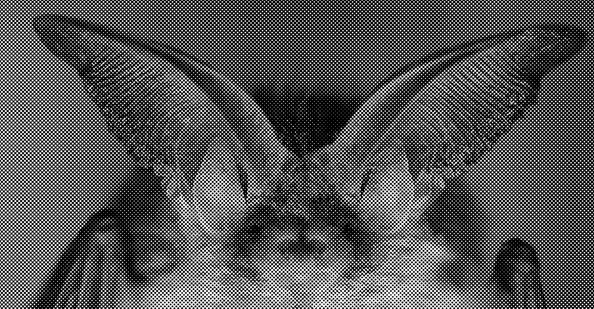
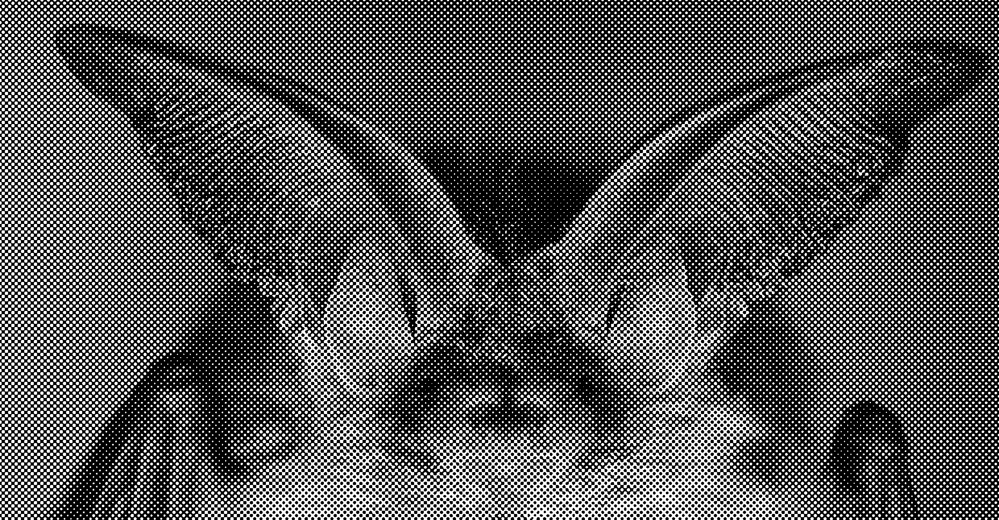
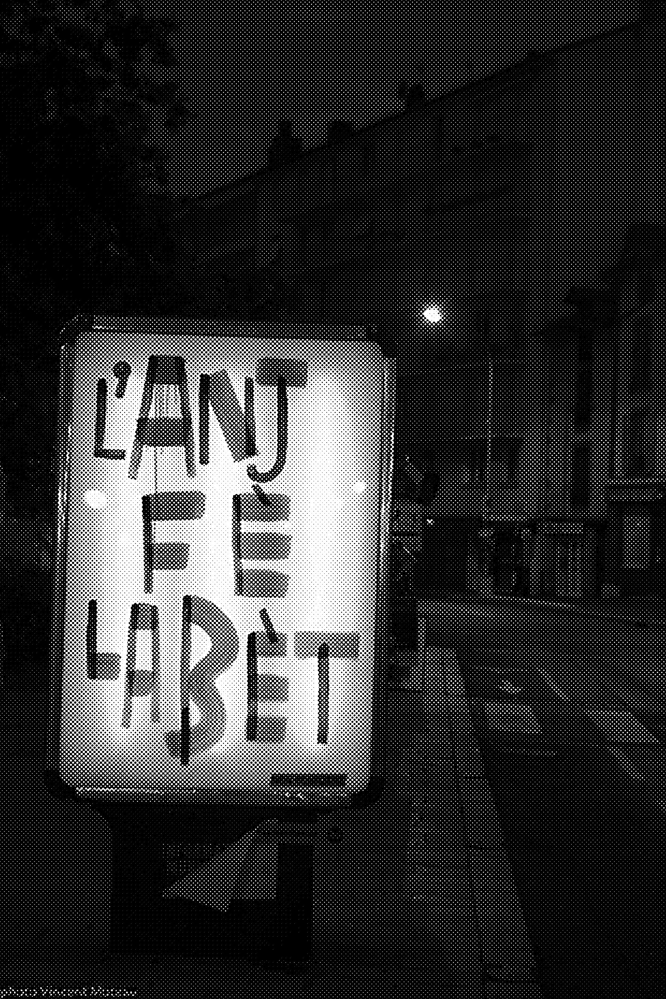
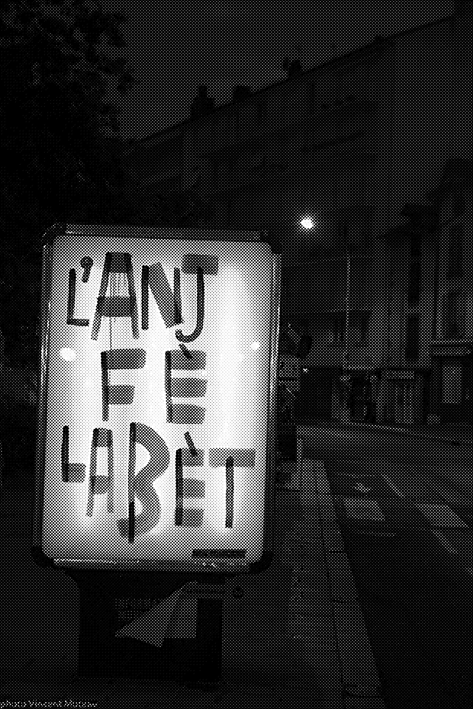
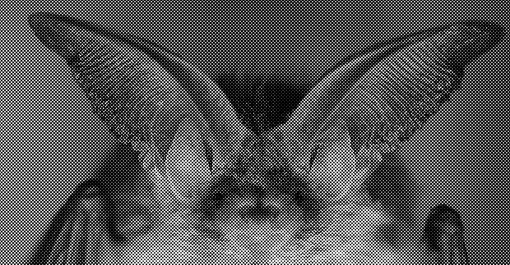
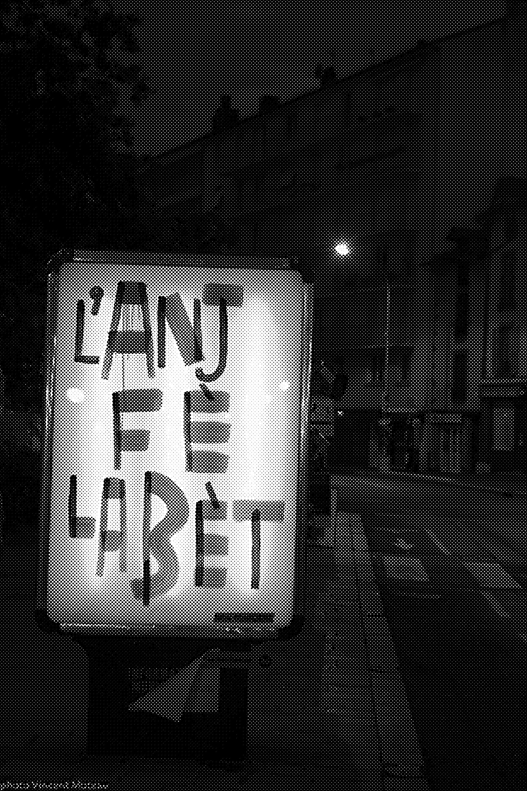

INDEX
LA DISSEMBLANCE INTERESPECE
TECHNOLOGIE PRIMAIRE
TECHNOLOGIES SECONDAIRES
TECHNOLOGIES TERTIAIRES
ORGANISATION SOCIETALE PAR L'ORALITE
ORGANISATION SOCIETALE PAR L'ECRITURE
L'ORALITE
L'ECRITURE
L'IMAGE COMME EXPERIENCE
LE DOMAINE MULTISENSORIEL
LE CONSTAT D'UNE SCISSION
L'HYPOTESE D'UNE FUSION
0 ABSTRACT
Speaking is the ability to communicate with others, to transmit a message. Speaking is something physical, anatomical by using phonatory organs helped by their neurocognitive coordination that allow control of the sounds produced from which means derives. Orality is an innate faculty which takes on a meaning through the function of communication and symbolization thanks to linguistic and cultural codes. We symbolize, we synthesize a message in a set of assimilated sounds to form an understandable message.
So we make other earing sense through the issued codes.
From speech follows a set of communication methods such as graphic representations or writing. These communication media have drawbacks compared to orality. But they also have advantages that make them useful. The image is an almost universal way of saying something, but it’s pretty hard to communicate about a concept or to say some specific word through drawings or photographs. The materiality of writing allows of the durability of the message but puts less emotion in it. But these technologies are not innate in human beings,they spring from cultural, physiological and linguistic learning where speaking belongs to what we will call a collective intelligence.
The challenge of my project is, firstly, to understand the inherent characteristics of the different communication technologies and media in order to know how to best convey a message. Then, in a second step, to think about methods that allow using communication technologies as vectors carriers of the speech. In this way, I could preserve the sensitive dimension of the orality while keeping it durable.
Through the image and the sign (assisted by technologies relating to media like data processing), I try to create a writing system resulting from the an orality and no longer from orality from the depending on/ initiating from a text.
This writing system will be used in a context that will be the rap one. Rap is a pop culture, exclusively oral at its beginning. It’s all the foundations of rap that are based on oral culture. Emotions, rhythm and tones are exaggerated. The writing system will therefore be put to the test through potential writing supports such as posters, websites, video or editorial supports.
0 L’UNIVERSALITÉ DU LANGAGEL’ensemble des êtres humains à la surface du globe forment une civilisation. Une civilisation du langage, elle-même divisée en sociétés utilisant chacune le langage de différentes manières, pour servir différents buts. Mais toutes ces sociétés n’en demeurent pas moins des sociétés communicantes. La communication, le langage, constitue l’ensemble de nos interactions, qu’elles soient endogènes ou exogènes.
La parole est partout, le dialogue interne que l’on entretient avec nous-mêmes est en soi une parole. Elle est ce qui constitue la majorité de notre temps.Le langage est le moyen, la communication la finalité. Comme le souligne Philippe Breton, tous les langages peuvent communiquer. Qu’il s’agisse du langage oral, écrit, pictural ou bien gestuel, ils permettent tous, à un degré différent, de communiquer, de transmettre un message. Mais pourquoi choisir de qualifier l’espèce humaine au xxie siècle de civilisation du langage ? En quoi la communication nous caractérise-t-elle ? L’espèce humaine n’est pas la seule dotée de langage. De nombreux animaux et êtres vivants comme les plantes communiquent entre eux.
Mais l’espèce humaine présente la particularité d’être tout à fait dépendante de la communication.
Nos langages sont omniprésents, nécessaires à notre survie et à notre élévation d’une condition d’animal primitif vers une civilisation globale. C’est une caractéristique inhérente à l’être humain. Le but est ici d’appréhender les enjeux de la communication à un niveau global au travers de l’analyse de différentes sociétés aux systèmes de langages variés et ainsi déterminer l’impact du système sur ce dont il est le vecteur, le message. En effet, si le langage est le moyen de la communication, alors le message en est la substance, l’objet.
Mais les différentes manières de communiquer ont elles toutes la même faculté à véhiculer un message ? existons-nous au travers de la communication ou est-ce que la communication dépend directement de notre façon de vivre ? Comment mieux communiquer pour potentiellement mieux vivre ? Il sera question ici, dans un premier temps, d’énoncer les différentes formes prises par le langage. Il faudra ensuite déterminer les traits distinctifs des différentes sociétés en fonction du système de langage qui y est employé. Seront ainsi mises en exergue les valeurs induites par lesdits systèmes de langage.
À partir de ces caractéristiques, nous essaierons de déterminer si oui ou non, le système de communication utilisé à un impact sur le message qui y est véhiculé ou si au contraire la substance du langage transcende la technique.
Finalement, à la suite de l’analyse et du constat d’un ensemble de systèmes et sociétés du langage, nous essaierons d’évaluer le rôle potentiel de l’humain et celui du graphiste dans une hypothétique élévation du langage à notre ère.
1.0 LES TECHNOLOGIES DU LANGAGE 1.1 La dissemblance interespèceL’ensemble des systèmes qui seront évoqués ici se définissent comme des technologies du langage. Cet énoncé est emprunté à Walter J.Ong qui définit en ces termes :
L’écriture, l’imprimé et l’ordinateur sont autant de technologies de la paroleIl est entendu par technologies du langage, toutes les manières différentes permettant de véhiculer un message. Le terme parole n’est pas employé ici puisqu’il fait référence, dans l’inconscient collectif, à la communication par voie orale. Il sera donc ici employé dans ce sens, et sera préféré langage lorsqu’il s’agira d’évoquer les vecteurs de messages utilisés par l’espèce humaine. Mais pourquoi parle-t-on de technologies ? Ces technologies du langage sont en fait ce qui différencie le langage humain et animal. Un bon nombre d’espèces disposent de systèmes de communication complexes assimilables aux nôtres. Les chauves-souris par exemple, ont un langage endogène leur permettant une meilleure appréhension de l’espace. Elles émettent des ultrasons dont les échos sont analysés pour créer une cartographie de proximité et ainsi éviter les chocs ou chasser des insectes. Ce procédé est une analogie de l’individu humain qui se parle à lui-même pour mieux appréhender ce qu’il est en train de faire ou pour mieux anticiper ses besoins.
La communication entre individus est également omniprésente chez les marmottes. Au travers d’une variété de cris ou de sifflements, les membres d’une colonie développent un réel langage répondant à des codes donnés. Les cris sont associés au domaine du jeu entre les jeunes marmottes là où les sifflements préviennent d’un danger. Le sifflement signifie nécessairement que les autres membres doivent se mettre à l’abri, mais il diffère en fonction de l’intrus. Là où un sifflement court et répété préviendra de la présence d’un renard, le sifflement unique et long sera dû à la présence d’un aigle au-dessus de la colonie.
Mais les langages précédemment cités ne subissent pas de modifications dues à une évolution de l’espèce. Or, l’homme est défini par Benjamin Franklin comme un Tool making animal, ou Animal fabricateur d’outils. En effet, l'humain a su s'élever par la technique pour contrer les faiblesses qui lui étaient inhérentes. Ces innovations, ont modifié notre manière de vivre et ces techniques, ces technologies sont inévitablement réinvesties à différents degrés dans le domaine de la communication. Ainsi, on obtient des technologies du langage, relatives à nos progrès techniques. Il semble nécessaire de préciser que, comme le dit Walter J.Ong, les technologies ne nous déshumanisent pas pour autant. Être réfractaire aux technologies, notamment celles relatives au langage, c'est refuser notre nature humaine en niant l'assimilation des techniques d'élévation à notre condition.
1.2 Technologie primaireLes technologies du langage peuvent être classées selon un schéma tryptique. Nous ferons analogie avec les systèmes de pensée philosophique utilisés par Ferdinand de Saussure dans son Cours de linguistique générale en organisant ainsi ces technologies: Une priméité, les technologies primaire, puis une secondéité, les technologies secondaires et enfin une tiercéité renvoyant aux technologies tertiaires.
1.2.1 L'oralité, une intelligence collectiveEn philosophie, la priméité renvoie à une conception de l’être indépendamment de toutes chose. La communication orale est une facultée innée à l’homme. L’oralité relève simplement d’une coordination de nos capacités neurocognitives avec nos organes phonatoires.
C’est une faculté anatomique, physique. Le nourrisson saura aisément exprimer son mécontentement ou sa douleur par les pleurs; et rira pour témoigner de son bien-être. L'expression par la voie ne nécessite aucun apprentissage qu’il soit physique ou social et s’en retrouve donc totalement assimilé à notre condition humaine.
Crier de douleur, pleurer de tristesse ou rire du fait d’une joie intense n’appelle aucune forme de concentration ou d’effort, et ce, dans toutes les sociétés et cultures.
Le terme d’intelligence collective fait donc référence à cette caractéristique d’une oralité intrinsèque à, entre autres, l'espèce humaine. Parler par contre, le langage articulé, se situe à mi chemin entre la priméité et la secondéité en ça qu’il nécessite un apprentissage linguistique, physique et culturel. Il est en effet nécessaire, dans un premier temps, de former. les organes liés au langage parlé comme la langue, la gorge ou les cordes vocales à la prononciation et l’élocution. Ces facultés sont, qui plus est, relatives aux cultures linguistiques et aux typologies vocales liées. Les anglophones ont par exemple plus de mal à prononcer les u comme les francophones. Les intonations imperceptible pour un français du mandarin modifie pourtant toute la signification d’un son en Chine. Les prononciations gutturales du dialecte libanais sont difficilement reproductibles pour un occidental non initié. Qui plus est, la symbolisation consciente d’un concept ou d’une entité physique par un objet sonore est ce qui permet d’amorcer les technologies du langage à venir. Ainsi, le langage parlé, articulé, ne relève plus tant de la priméité mais plus de la secondéité. mais n’en demeure pas moins une technologie du langage totalement universelle. Ce qui en fait une technologie primaire. Sur 3000 langues aujourd'hui seule 78 possèdent une écriture L’oralité est ce qui fonde les bases et structures des autres technologies du langages de manière absolue.
1.3 Technologies secondaires 1.3.1 La scripturalisation, nécessité démographiqueLa secondéité est le caractère de l’être relativement à un élément extérieur comme le temps, les forces élémentaires ou l'expérience. La scripturalisation est une réaction du langage à l'expérience de l’oralité unique.
Mais elle n’en est pas pour autant une évolution, elle est une autre forme du langage, une forme complémentaire de l’oralité. En effet, comme avancé par Walter J.Ong:
L'écriture n'existe pas sans l'oralité, on lit à voix haute ou basse mais on transforme l'écrit en son là où l'oralité ne nécessite pas d'être transformée en écrit.Il est légitime de se demander en quoi était-il nécessaire de rendre visible une parole orale ? L’apparition de l’écriture est liée à une explosion démographique simultanée en Mésopotamie, Iran et probablement en Égypte. Cette croissance soudaine de la population a entraîné un besoin en nourriture exponentiel. Le marché s’est donc globalisé, les différentes villes ont commencé à échanger entre elles; et le besoin de fixer ces échanges qui se multipliaient dans un but de comptabilité s’est fait ressentir.
L’écriture deviendra, plus tard, liée à la religion et se verra confier le statut d’immortalisation de la parole divine. Les lois religieuses, une fois écrites, obtiendront un statut absolu, ne dépendant même plus de l’humain.
Les premières formes d’écritures étaient donc des nombres, des chiffres. Les premiers textes relevaient de l’arithmétique et non du littéraire. Mais en sont-ils, des textes ? Aujourd’hui, dans le sens commun, ne sont considérés comme des textes que les écrits comprenant des lettres. Mais Clarisse Herrenschmidt explique que le mot texte va chercher ses racines dans le champ lexical latin du tissage. Le texte n’est en fait que le résultat d’un assemblage, d’un tissage de différents éléments entre eux. Et en l’occurrence, lesdits éléments sont des signes.
Les systèmes de communication sont universellement composés de signes. Ils peuvent prendre la forme d’idéogrammes (des graphies représentants des concepts), de pictogrammes (des graphies représentant littéralement une chose physique), de logogrammes (des graphies représentants une suite de sons) ou de lettres (des graphies constitutives de mots).
Toutes les cultures écrites ne présentent pas la totalité de ces typologies de signes, mais ces concepts permettent d’englober l’ensemble desdites cultures. Les idéogrammes sont également appelés sinogrammes en linguistique chinoise et les logogrammes peuvent à la fois renvoyer à un son en tant que mot complet ou à une syllabe. Dans ce cas, nous parlerons d’écriture syllabographique. Ce système d’écriture était utilisé en complément d’un système de pictogrammes notamment dans l’écriture maya ou pour le système hiéroglyphique égyptien.
La forme que prendra l’écriture est liée directement avec l’oralité. Par exemple, la graphie chinoise prend la forme de sinogrammes puisque les mots sont monosyllabiques et donc indécomposables. Le langage repose sur les concepts introduits par Ferdinand de Saussure de signifiant et de signifié. Ces concepts présente le langage comme un objet faisant référence à un autre. Ces objets peuvent être sonores, idéologiques, physique ou graphiques mais ils font signes. Ils renvoient à. L'écriture complexifie ce schéma, Ogen et Richard présente le système linguistique sous forme d'un triangle sémiotique. Dans celui-ci, on retrouve la chose évoquée, le mot qui est donc le symbole et le concept. En effet, Ferdinand de Saussure explique que le signe linguistique n'associe non pas un nom et une chose, mais un concept et une image acoustique.
Le signe renvoi en fait au concept ou à la représentation auditive mais pas à la chose désignée directement.
Mais comment définir un signe linguistique ? Qu'elles en sont les caractéristiques ? Ferdinand de Saussure le définit selon quatre principes fondamentaux.
Premièrement l'arbitraire du signe, c'est à dire que le signe est associé de manière immotivée à un référent qui pourra varier selon les cultures linguistiques. Dans un second temps, il définit le signe comme linéaire en ça qu'il ne peut que précéder ou succéder à un autre signe et non s'y superposer.
Ce qui est d'autant plus vrai dans un cadre de communication orale ou le principe d'instant ne permet pas à un émetteur de produire deux signes en même temps. À l'écrit, superposer graphiquement deux signes viendrait à créer un nouveau signe, et donc à altérer la compréhension. Puis, Ferdinand de Saussure mentionne l'immutabilité synchronique. C'est-à-dire qu'un locuteur, à l'intérieur d'une communauté linguistique, ne pourra pas arbitrairement modifier le sens d'un signe si ledit signe y est d'ores et déjà défini ; mais il admet, avec la mutabilité chronique, que le temps peut toutefois modifier la signification d'un symbole en fonction de l'histoire de la communauté linguistique.
Là où Ferdinand de Saussure définit le signe comme la plus petite unité significative, Charles Sanders Peirce lui ne conçoit pas les signes de manière horizontale mais comme des entités plus ou moins complexes ayant toutes les mêmes capacités de signification.
Il définit le signe comme un représentamen, c'est à dire une représentation matérielle d'un objet de pensée qui vient faire lien entre l'objet de pensée et l'objet signifié. Mais donc le signifiant peut être n'importe quoi du tant qu'il renvoi vers un objet de pensée. Le signe typographique par exemple renvoi, dans l'alphabet latin, à une sonorité, l'assemblage de plusieurs lettres à une syllabe et enfin au mot qui signifiera un objet de pensée linguistique emmenant à au signifié final. Mais de la même manière, l'échantillon de couleur sur un pot de peinture peut référer à l'objet mental de la couleur correspondante pour enfin signifié la couleur du pot de peinture par déduction. Walter J.Ong explique en parlant de l’écriture:
Elle constitue en soi une technologie mais tant ancienne que nous l'avons intériorisé, assimilé (contrairement à Platon et ses contemporains par exemple). Nécessitant un grand nombre d'outils et de prérequis elle est même la technologie par excellence qui a précédé, donner la voie à suivre pour l'imprimerie et l'informatique.L’écriture est un système complexe, mais une fois son apprentissage fait, il devient instinctif puisque il est ancré dans les sociétés utilisant généralement cette dernière. La condition humaine l’a totalement assimilé de part son ancienneté et sa facilité actuelle de mise en oeuvre.
1.3.2 L'imprimerie, expansion du langageIl faudrait considérer l’imprimerie comme un support, une mise en oeuvre de l’écriture, en ça qu’elle ne permet pas une manière tout à fait nouvelle de communiquer. Mais il est nécessaire de la considérer comme une technologie du langage tant elle a modifier la manière de communiquer par l’écrit.
Il s’agit d’un tournant bien plus significatif sur la communication que l’a était l’invention du papyrus après les tablettes d’argiles. Dès l’apparition des premières formes artistiques liées à l’écriture ou au dessin, la nécessité de pouvoir les reproduires pour les rendre pérennes est apparue. L’enjeu était non plus pratique mais artistique. Si l’écriture avait dans un premier temps une utilité purement commerciale, elle est rapidement devenue en occident une pratique élitiste, réservée à la noblesse et au clergé. L’utilisation de l’imprimerie, elle, établi un schéma inverse en servant dans un premier temps des fins religieuses. Les premières traces de l’imprimerie apparaissent en Chine en 642. Il s’agissait de d’illustrations religieuses en xylographies dans un livre bouddhique.
Les premières imprimeries à caractères mobiles assimilables à la futur machine de Gutenberg apparurent au XIème siècle en Chine également. Ici également, l’enjeu de cette invention était relatif à la religion. Les imprimeries servaient en fait de moulin de prière automatisé.
L’invention de l’imprimerie en Chine ne servait finalement pas à diffuser un même message auprès d’un grand nombre d’individus mais plutôt à adresser un grand nombre de fois le même message à une divinité. Marshall McLuhan appuie ce propos :
L'imprimerie chez les Chinois, n'avait pas pour fonction de produire en série des marchandises uniformes pour une économie de marché et un système de prix. L'imprimerie était une version nouvelle des moulins à prières, une nouvelle façon visuelle de multiplier les incantations, comme aujourd'hui la publicité.Le caractère matériel de l’écriture augmenté de la capacité de reproduction de l’imprimerie entraîne donc une diffusion plus large des dogmes religieux et facilite le culte. Mais comme le souligne Dieter Mersch l’apparition de l’imprimerie de Gutenberg dans le détachement du clergé par l’écriture a une importance capitale:
l'histoire du bassin méditerranéen permet à Innis de décrire l'apport des différents langages oraux sur une écriture jusque-là immobile et réservée au clergé. Elle en devient libérée de ses chaînes à des fins de commerces ou de translation, emportée par le développement de l'imprimerie de Gutenberg.Bien que des romans aient étés déjà publiés en orient avant les invasions mongoles, qui ont permis la diffusion des techniques d’impression en occident, c’est l’imprimerie de Gutenberg qui permet l’expansion de la production imprimée par caractères mobiles. Cette situation est également permise par l’apport des techniques de création du papier venues du monde musulman par l’Espagne.
Gutenberg re-invente l’imprimerie existante jusque là en proposant l’utilisation des caractères mobiles en plomb typographique. L’encre utilisée jusqu’alors en imprimerie était l’encre de chine, là aussi Gutenberg propose une nouvelle formule plus épaisse permettant une utilisation plus facile et une impression d’une qualité constante. Enfin, il met au point sa presse en bois qui permet une impression rapide et peu coûteuse. Ainsi, En 1451, Gutenberg publie le premier livre imprimé par sa machine, La grammaire Latine de Donatus.
Ainsi, l’imprimerie modifie le rapport à l’écriture puisqu’il ne s’agit in fine plus d’écriture cursive mais de typographie. Les signes utilisés pour communiquer s’en trouvent modifiés, mais la manière dont on communique également. Les capacités de diffusion et de reproductibilité de l’imprimerie ont métamorphosé la communication écrite occidentale.
1.4 Technologies tertiaires 1.4.1 L'oralité secondaire, une oralité techniqueLa tiercéité est le résultat de la priméité et de la secondéité. Elle résulte d’une synthèse entre les capacités de l’être indépendamment de toutes choses et de l’individu en rapport avec son monde. L’oralité secondaire en est un parfait exemple. Philippe Breton définit l’oralité secondaire comme un ensemble de modes de transmissions de l’oralité reposant sur l’écriture. Cette phase apparaît avec les premiers systèmes d’enregistrement et de diffusion audio. On attribue généralement les premiers enregistrements à Édouard-Léon Scott de Martinville en 1860. Il restitue ces sons sous la forme de graphiques sur une bande de papier. Les premiers appareils émetteurs de sons étaient des phonographes inventés par Edison datant de 1877. L’oralité se trouve ainsi déplacée dans un paradoxe mis ainsi en évidence par Dieter Mersch :
Celle-ci ne consiste pas simplement en une sorte de ré investiture de l'oralité antique […] elle produit quelque chose de complètement nouveau : une oralité qui requiert les médias, et qui pour cette raison serait inconcevable voire tout simplement impossible sans l'écriture et l'imprimerie, et ce, alors même qu'elle repose sur des formats non scripturaux.L’oralité se trouve donc dépendante des médias, privée des libertés qui lui étaient initialement attribuées.
Mais quels bénéfices y a t il à proposer une oralité secondaire ? L’oralité permettait une interactivité évidente puisque l’on pouvait, en dehors des codes sociaux, couper, questionner répondre avec le locuteur. L’auditeur avait la capacité d’intervertir les positions pendant la discussion au gré de ses envies. Hors, l’interactivité, avant l’invention du téléphone, ne disposait d’aucune interactivité puisque le message parvient à l’auditeur par le biais de la machine, mais il n’est pas possible de faire du locuteur un auditeur. Il est impossible de poser des questions à la télévision ou à la radio.
Mais tout l'intérêt de l’oralité secondaire se situe dans sa capacité de duplication et de transport. En se basant sur un système scriptural pour créer un outil d’oralité, on l’affuble certes des inconvénients propres à l’écriture mais on lui confère également les caractéristiques inhérentes à l’écriture. L’oralité devient ainsi duplicable, transportable et pérenne. Il devient même possible d’y introduire une notion d’auteur.
1.4.2 L’informatique, jonction des langagesComme pour l’imprimerie, l’informatique, également appelé numérique, semble relever plus du support de langage que de la technologie de communication. Mais pourtant le numérique affecte profondément le langage à l’époque contemporaine, proposant un panel de moyens de communication étendu.
Il est intéressant de noter que, comme indiqué plus avant, l’écriture prend source dans le domaine du numérique, numérique comme relatif aux nombres, et que l'informatique opère le même schéma. Dans son histoire, l’informatique puise son fonctionnement dans les machines à tisser, non sans lien avec l’étymologie du mot texte mentionnée précédemment, mais également dans les calculateurs mécaniques.
Les premiers ordinateurs n’avaient d’ailleurs pour seule fonction que celle de calculer. Konrad Suze proposa en 1936-38 les prémices de l’ordinateur avec le Z1. Il s’agit d’un calculateur qui a pour fonction d’utiliser le calcul pour proposer des formules permettant d’optimiser l'aérodynamisme.
Plus tard apparaît la machine de Turing, bien qu’il s’agisse à l’origine de décoder du texte, il s’agit d’un principe algorithmique uniquement fondé sur une approche mathématique de la programmation de la machine.
Mais plus que l’histoire de l’informatique, c’est son fonctionnement même qui repose sur les schémas d’évolution de l’écriture. Toute la programmation informatique repose sur un code binaire qui vient structurer l’ensemble de la machine.
La machine n’y voit que des points de contact électriques ou non, mais l’humain y verra une suite de 0 et de 1. Dans l’histoire de l’écriture et de ses supports, le nombre précède donc de manière pratiquement universelle la lettre.
A ujourd’hui le numérique introduit une nouvelle forme de langage, l’individu peut désormais communiquer avec la machine. On entretient un langage propre à l’informatique permettant à la communication avec l’ordinateur pour potentiellement, via les réseaux internet plus tard communiquer avec d’autres individus. Les premières traces de la communication entre humains via un système de réseau informatique sont dues à Tim Bernes-Lee. L’enjeu de son projet World Wide Web, qui deviendra notre www, était de mettre en relation les postes informatiques au sein du CERN afin d’y relayer des informations entre les scientifiques. Les communications par réseau sont ensuite progressivement étendues de manière globale pour produire le réseau internet dont on dispose aujourd’hui.
Mais la conception même du langage est modifiée avec l’informatique. Puisque le langage informatique est soumis aux limites des machines et que l’on a dû définir un champ des possibles pour les machines. À l’inverse du langage écrit ou oral dont aucunes règles n’étaient définies avant son utilisation. C’est parler et écrire qui a permis de définir les règles propres à la communication par ces vecteurs de messages. Walter J.Ong explique ainsi :
Le langage informatique et son usage découlent de règles là où le langage écrit obéit à des règles découlant de l'usage.Alors que permet l’informatique ? Qu’est ce que le langage avec et via les supports numériques apporte à la communication ? L’informatique permet ce qui sera appelé une fusion médiatique. C’est à dire que, placé dans le cadre philosophique de tiercéité, l’informatique permet, dans le sillon de l’oralité secondaire, de fusionner les modes d'expression. Jacques Donguy démontre, avec ses poésies numériques, que le texte informatique peut produire du son. Et ce texte peut être lû simultanément. Ainsi, l’informatique propose une expérience de l’oralité, non pas produite par l’écrit, mais en simultanée d’une écriture.
Ces technologies sont tout de même relativement récentes et coûteuse tant financièrement que intellectuellement. L’apprentissage lié au langage informatique et complexe. De ce fait, l’informatique n’est pas une technologie du langage ayant vocation à remplacer les médiums et systèmes de communication existants. Le numérique permet simplement de fusionner plusieurs systèmes, il ouvre de nouvelles possibilités.
2.0 Organisation sociale du langageIl est nécessaire d’aborder les cultures orales et chirographiques ou typographiques en parallèle. Ces technologies ne sont pas apparues de manière simultanée, mais constituent chacune les moyens d’expression privilégiés de certaines sociétés. Vois, dans le cas de l’oralité, le seul vecteur de langage de certaines cultures. L’utilisation, ou non, de ces technologies impacte profondément lesdites sociétés. Comme Walter J.Ong le soutient, les différences entre les sociétés en fonction du système de langage y prédominant en font des sociétés fondamentalement différentes notamment au travers de la transmission et du stockage du savoir :
CES DERNIÈRES ANNÉES, DES DIFFÉRENCES FONDAMENTALES ONT ÉTÉ DÉCOUVERTES ENTRE L’ORGANISATION DU SAVOIR ET LA VERBALISATION DANS LES CULTURES ORALES PRIMAIRES ET DANS LES CULTURES PROFONDÉMENT AFFECTÉES PAR L’UTILISATION DE L’ÉCRITURE.Mais ces différences s’opèrent même dans la relation au monde de l’individu. Il sera précisé plus bas les différences propres à chaque culture, mais pour mettre en évidence ces disparités, Marshall McLuhan utilise l’exemple de la législation :
DANS UNE SOCIÉTÉ TOTALEMENT ALPHABÉTISÉE, C’EST LE CONFORMISME DE LA CONDUITE OBSERVABLE QUI LIBÈRE L’INDIVIDU DU CONFORMISME DE LA PENSÉE. […]UNE SOCIÉTÉ ORALE CONSIDÈRE LA VERBALISATION MÊME INTÉRIEURE COMME UNE ACTION SOCIALE EFFICIENTE.En effet, des exemples comme la Russie, qui est une société majoritairement orale, démontrent que la perception de ce qui est répréhensible peut changer. Dans une culture de l’écriture, seul ce qui est palpable, prouvable peut être un motif d’accusation. La matérialité constante de ces cultures pousse à n’envisager l’acte efficient que comme relevant du domaine du visible. Les sociétés de l’oralité, elles, considèrent la pensée et la parole comme des actions ayant un impact, et donc répréhensibles. Nos sociétés se définissent au travers de nos moyens de communication.
Plus qu’une caractéristique, le langage est partie intégrante de notre oralité.
2.1 ORGANISATION SOCIÉTALE ET ORALITÉIl est nécessaire, pour analyser les sociétés majoritairement orales et celles majoritairement écrites, de ne pas établir de hiérarchie. Comme précisé plus avant, l’écriture n’est pas une évolution de l’oralité, simplement une technologie annexe du langage prenant racine dans l’oralité. Les sociétés majoritairement orales ne doivent donc pas être considérées comme primitives. L’exemple de la Russie comme une société basée sur l’ouïe en témoigne d’ailleurs. Eric Havelock explique d’ailleurs que :
UNE CIVILISATION PEUT COMPLÈTEMENT REPOSER SUR LA COMMUNICATION ORALE SANS RIEN PERDRE DE SA GRANDEUR.Certaines civilisations reposent même leur identité, leur histoire sur le système de langage. Ainsi, Geneviève Calame-Griaule définit les Dogons comme une civilisation du verbe. La cosmologie de manière générale utilise la parole divine pour expliquer, quelleque soit la religion, les fondements de notre monde. Mais les Dogons vont jusqu’à utiliser l’oralité et leur linguistique pour structurer une temporalité. Ogotemmêli, un chasseur et savant dogon, observe une progression dans le langage dogon qui témoigne d’une évolution de la communauté, le langage devient témoin du développement. Pas comme moyen technique de supériorité, mais dans son enrichissement. Il fait d’ailleurs, lorsqu’il parle avec Marcel Griaule, une analogie avec des techniques et des outils relevant du monde matériel. Sans doute l’a-t-il fait pour permettre à un homme venant d’une société où la vue importe plus que l’ouïe, de mieux appréhender l’évolution du langage parlé.
LE PREMIER LANGAGE AVAIT UNE SYNTAXE ÉLÉMENTAIRE, UN VERBE RARE, UN VOCABULAIRE SANS GRÂCE. LES MOTS ÉTAIENT DES «SOUFFLES PEU DIFFÉRENCIÉS, MAIS CEPENDANT PORTEURS DE FORCES». LES DOGONS CONSIDÈRENT PLUSIEURS ÉTAPES DE PROGRESSION DANS LE LANGAGE. ILS FONT UNE ANALOGIE ENTRE LA PAROLE, SA FINESSE, SON PERFECTIONNEMENT ET DES TECHNIQUES DE TISSAGE. «LA PREMIÈRE PAROLE, FRUSTRE ASSOCIÉE À UNE TECHNIQUE SIMPLE, CELLE DE LA FIBRE NON NOUÉE ET NON TISSÉE, PAROLE QUI MÉLANGE LA FIBRE BRUTE ET L’HUMIDITÉ. LA SECONDE PAROLE ÉMANE DU TISSAGE, JUSQU’À LA TROISIÈME PAROLE CLAIRE ET PARFAITE. LES DOGONS AFFIRMENT AINSI PAR LA CONSCIENCE QU’ILS ONT UNE HISTOIRE, À TRAVERS L’HISTOIRE DE LA FORME PRISE PAR LEUR PROPRE PAROLE.L’organisation en société des connaissances est un des domaines d’application première du langage. Les sociétés majoritairement orales ont, évidemment, de pareilles nécessités. Un exemple assez complet de cette organisation est la culture peule. L’écrivain Amadou Hampâté Bâ explique en détail les différents stades de vie liés à l’apprentissage dans ces cultures.
Toute la vie d’un membre des Peuls est structurée en tranches de 7 ans. L’apprentissage y est oral, immatériel et ne dépend donc pas de cadres prédéfinis comme l’école. Tout peut y faire état d’apprentissage de la session de jeu à la corvée du puisement de l’eau.
L’apprentissage commence donc entre 0 et 7 ans. Durant cette période, on considère qu’il est à l’école de sa mère. Il n’écoute qu’elle et lui demande sa confirmation. Puis, vient l’école du dehors jusqu’à 14 ans où l’enfant va apprendre à l’extérieur, mais dépend toujours de la confirmation de sa mère
De 14 à 21 ans, l’individu commence à se détacher de sa mère, à raisonner par lui-même et à remettre en question les connaissances que sa mère lui apporte. À la fin de ce premier cycle de trois septénaires, le jeune adulte est censé avoir eu une première approche avec tous les domaines. Ainsi, à partir de 21 ans, l’individu est censé approfondir ses connaissances dans tous les domaines jusqu’à 42 ans. Durant ces deux premiers cycles, l’individu n’a pas le droit de prendre la parole en présence d’une personne plus sage que lui. Il doit écouter pour apprendre. À partir de 42 ans, il devra discuter, il pourra parler pour apprendre encore, pour savoir mieux et plus, mais devra surtout rendre tout ce que la société lui a appris en devenant enseignant. Il devra communiquer aux plus jeunes générations son savoir afin de restituer tout ce qui lui a était permis de prendre. Il est un homme fait, fini. On exige donc qu’il enseigne pendant encore 21 ans. À partir de 63 ans, il n’est plus forcé d’enseigner, on considère qu’il a enseigné et rendu ce qu’il devait. Mais il peut tout de même continuer à donner s’il en a le désir.
Cette structure est, en soit, assimilable aux écoles primaires, secondaires et tertiaires. L’âge fait office de diplôme, de confirmation. L’âge n’est pas pour autant un argument d’autorité. Il est en fait un indice d’une présumée sagesse.
Il permet simplement de matérialiser la connaissance dans les individus et de les assimiler à des sources de savoir ou à des individus en recherche de ce dernier. Ainsi, Amadou Hampâté Bâ explique qu’il peut y avoir de jeunes hommes de 73 ans et des vieillards de 5.
2.2 ORGANISATION SOCIÉTALE PAR L’ÉCRITUREOn peut assimiler la temporalité de l’apprentissage dans les sociétés majoritairement orales à celles utilisant l’écriture. Mais pour autant, le système d’apprentissage diffère. Bien qu’il existe un âge de l’oralité entre 0 et 5 ans, il est destiné à conditionner l’individu à une société de l’écrit. Les connaissances linguistiques assimilées ont vocation à l’apprentissage de la langue. Cet enrichissement se fait d’ailleurs majoritairement au travers de livres. On apprend également, au travers d’exercices de coloriages ou de découpes, à l’enfant la dextérité nécessaire à une future pratique de l’écriture. À partir du moment où l’écriture est assimilée, l’organisation sociale change. On a tendance à concevoir la lecture comme moyen d’enrichissement intellectuel. La discussion, les bavardages ou autres activités extérieures au cadre de l’école ne relèvent plus d’un apprentissage, mais d’un loisir avant tout. Selon Walter J.Ong, on y mémorise les notions, les connaissances dans les livres. Mots pour mots, là où les sociétés de l’oralité ont tendance à considérer l’expérience comme vecteur de connaissances, les sociétés au système de communication basé sur l’écriture cantonnent l’enseignement à l’école et aux textes écrits à retenir par cœur. Tout ce qui se trouvera extérieur à ce cadre précis ne sera pas source d’un apprentissage aux yeux de la société. L’oralité se trouve presque exclue du cadre de l’apprentissage. Ainsi, la conception même du savoir et donc des actions effectives s’en trouvent bouleversées. Ce que l’on peut dire, ou penser a moins d’impact dans l’esprit collectif que ce que l’on fait. La puissance des actes est décuplée vis-à-vis de celle des mots par le simple fait qu’elle est tangible, observable. Walter J.Ong explique également que l’étude de l’oralité s’en trouve dénaturée puisque :
LES DISCOURS COMPOSÉS ORALEMENT ÉTAIENT ÉTUDIÉS NON PAS EN TANT QUE DISCOURS, MAIS EN TANT QUE TEXTES ÉCRITS.La technologie du langage choisie et le médium a donc un impact direct sur la perception du message et sa nature.
3.0 LE MESSAGE ET SA RELATION AU SUPPORTL’ école canadienne a introduit la notion de relativité du message au support. Ce mouvement de pensée a commencé par avoir un rapport pessimiste vis-à-vis de la technique pour finalement se rendre compte, dans les années 70, de l’importance de la considération des nouvelles technologies. Dieter Mersch les définit en ces termes :
ON EST FACE À UN GROUPE D’ANTHROPOLOGUES, D’ETHNOLOGUES, DE CHERCHEURS EN LITTÉRATURE, DE PHILOLOGUES ET D’HISTORIENS QUI S’ÉTAIENT TOUS FIXÉ COMME BUT D’EXAMINER LES INFLUENCES DE L’ÉCRITURE ET D’AUTRES MÉDIAS DE COMMUNICATION SUR LE DÉVELOPPEMENT DE LA CULTURE.[…] DEPUIS, LA THÉORIE DES MÉDIAS S’EST ENRICHIE D’UNE NOUVELLE DIMENSION : ELLE EST ÉGALEMENT UNE ANALYSE DE L’ACTUALITÉ. TRADITIONNELLEMENT NÉGLIGÉS, LES BOULEVERSEMENTS MÉDIATIQUES ET LES INNOVATIONS TECHNIQUES DEVIENNENT À PRÉSENT LE PARAMÈTRE PRINCIPAL À PARTIR DUQUEL IL FAUDRA ÉVALUER LES CÉSURES AUSSI BIEN SOCIALES QUE CULTURELLES.Le message porte donc en lui un sens, non seulement linguistique, mais également sensible. L’ensemble des caractéristiques sensibles, non verbales du message induisent un sens. Le support du message vient modifier, altérer le message.
La technologie du langage jusqu’au support physiquede l’écriture ou de l’image peut interférer dans la transmission dudit message. L’école canadienne a donc permis de mettre en évidence plusieurs caractéristiques essentielles dans l’étude des systèmes de communication. Les messages sont donc non seulement influencés par les technologies du langage utilisées dans une société donnée, mais influencent, définissent également l’évolution et l’apparition de ces formes de communication. L’interdépendance entre le message et son support conditionne l’étude des systèmes de communications vers une analyse des modifications opérées sur le message relativement aux différents systèmes de communication
3.1 L’ORALIté POUR CICÉRON, LA SCIENCE EST ÉLOQUENCE PARCE QUE L’ÉLOQUENCE SEULE PEUT OUVRIR À LA CONNAISSANCE LES ESPRITS ET LES CŒURS. 3.1.1 LE CARACTÈRE ÉVANESCENT DE L’ORALITÉLe mot hébreu dabar signifie à la fois mot et événement. L’oralité résulte de l’instant. L’ouïe ne permet de capter que des sensations fugaces, non reproductibles. À l’instant même où les mots sont prononcés, ils cessent d’exister. Walter J.Ong met en opposition l’ouïe et la vue pour souligner l’évanescence de l’oralité.
TOUTES LES SENSATIONS S’INSCRIVENT DANS LE TEMPS […] LE SON EXISTE SEULEMENT LORSQU’IL EST SUR LE POINT DE CESSER D’EXISTER […] IL EST ESSENTIELLEMENT ÉVANESCENT. […] ARRÊTER UNE CAMÉRA ET NE GARDER QU’UNE IMAGE FIXE […] J’INTERROMPS LE MOUVEMENT DU SON, JE N’AI QUE DU SILENCE.Cette caractéristique de l’oralité est simplement dû à son absence de matérialité. On ne peut pas étudier un discours oral en profondeur et à plusieurs reprises dans sa forme originelle. Seule la répétition permettrait l’étude de la parole, mais ne garantit pas une fidélité vis-à-vis de l’instant et de l’intention d’émission du message.
Amadou Hampâté Bâ, propose une analogie entre les sociétés de la vue et celles de l’ouïe mettant en évidence la fragilité de l’oralité face au temps : (En Afrique) quand un vieux meurt, c’est une bibliothèque qui flambe. Il est en effet impossible de reproduire la connaissance emmagasinée au cours d’une vie par un homme si elle n’a aucune essence matérielle. Comme expliquée lors du passage sur l’organisation sociétale des cultures orales, la seule trace, le seul moyen permettant potentiellement de rééditer une performance orale est de la répéter, de raconter à nouveau. Malgré le fait qu’il ne s’agisse donc plus nécessairement du même narrateur, du même espace ou de la même acoustique, c’est là le seul moyen d’élever l’oralité vers une culture reproductible.
LA TRADITION ORALE NE POSSÈDE AUCUN RÉSIDU OU DÉPÔT SEMBLABLE. […]UNE HISTOIRE SOUVENT RACONTÉE, TOUT CE QUI SUBSISTE D’ELLE EST LA CAPACITÉ DE CERTAINS ÊTRES HUMAINS À LA RACONTER. 3.1.2 L’ORALITÉ RETRANSMISSIBLELa seule manière efficiente de faire perdurer une culture orale est donc de la répéter pour que les connaissances perdurent même après la mort de l’émetteur original. Mais il apparaît relativement complexe de contenir le savoir à mesure qu’il s’amoncelle en ne se fiant qu’à la mémoire. Walter J.Ong avance le moyen mnémonique comme une des solutions employées dans les sociétés de l’ouïe pour structurer les connaissances dans la mémoire. Milman Parry a démontré que la poésie homérique était le fruit d’une culture orale et ne s’était retrouvée retranscrite sous forme matérielle que récemment. Dans une société de la vue, on se demanderait comment est-il possible de se souvenir sans traces écrites de textes aussi longs. C’est exactement sur ce point-là que les théories de l’école canadienne se vérifient. En effet, non seulement la manière de stocker l’information orale dépendra des caractéristiques de l’oralité, puisqu’elle ne peut pas être matérialisée, mais la construction des connaissances à se rappeler va directement découler de la manière de stocker l’information.
PARRY DÉMONTRE QUE TOUS LES TRAITS DISTINCTIFS DE LA POÉSIE HOMÉRIQUE SONT DUS À L’ÉCONOMIE QUE LUI IMPOSENT LES MÉTHODES DE COMPOSITION ORALES. […] L’ENSEMBLE DU SAVOIR ORAL SE PRÉSENTE SOUVENT DE MANIÈRE FORMULAIRE ASSIMILABLE À LA POÉSIE.En effet, le statut de l’oralité impose non seulement des moyens mnémoniques, mais la construction d’une chanson permet de cristalliser plus facilement l’information. Le système métrique liée à la musicalité permet de se rappeler plus facilement du texte. Si le conteur sait que le récit est composé selon une métrique donnée, il utilisera ce que l’on appelle Le Gradus, un répertoire d’expressions convenant au rythme en question. Ainsi, le texte n’est pas nécessairement le même en fonction des représentations, mais il respecte un ensemble de points clés permettant de conserver la trame de l’histoire. Entre les points clés, le conteur utilise ensuite ses propres formules pour lier la trame tout en conservant une musicalité. Walter J.Ong mentionne les explications de Milman Parry qui viennent éclaircir cette idée :
ULYSSE N’EST PAS “POLYMÉTIS” (RUSÉ) SIMPLEMENT PARCE QU’IL EST CE GENRE DE PERSONNAGE, MAIS PARCE QUE SANS L’ÉPITHÈTE “POLYMÉTIS”, LE VERS SERAIT BANCAL. METEPHÉ POLYMÈTIS ODYSSEUS, PROSEPHÉ POLYMÈTIS ODYSSEUS. 3.1.3 LA CAPACITÉ D’ADAPTABILITÉ DE L’ORALITÉLa flexibilité dans la structure du récit oral permet au conteur une certaine liberté. Ce qui permet dans un premier temps, comme expliqué en amont, d’autoriser le conteur à utiliser des expressions différentes sans risquer de perturber la musicalité et la narration du récit original.
Mais surtout, cette liberté permet d’adapter des éléments mineurs du récit en fonction de son public et de lui permettre une meilleure identification aux situations évoquées. Amadou Hampâté Bâ prend pour exemple une structure narrative simple où un individu se déplace d’un point vers un autre en rencontrant divers éléments perturbateurs sur son chemin. Le conteur peut adapter l’environnement immédiat à son histoire. D’abord pour permettre aux auditeurs de reconnaître et de se reconnaître dans les éléments de l’histoire, mais également pour apprendre aux auditeurs sur leur environnement.
Ainsi, si les auditeurs sont issus d’une société pastorale, le conteur peut utiliser de grands pâturages et des arbres comme cadre et en profiter pour enseigner les plantes comestibles ou aux vertus médicinales environnantes. Il en résulte donc d’un enseignement directement lié au public, permis par la flexibilité de l’oralité.
3.1.4 LA PAROLE AUTHENTIQUELa parole est, comme le dit Claude Hagège: Seule naturelle, est seule chargée de tout le sens d’origine. C’està-dire que les intentions de l’émetteur du message ne peuvent être toutes restituées que par le vecteur de l’oralité. Une caractéristique induite par un ensemble de facteurs variables propres à l’oralité comme l’amplitude sonore, le rythme, la tonalité ou encore le grain de voix. L’impact d’un message oral est maîtrisable, quantifiable dans le sens où ces facteurs ne dépendent pas du récepteur.
Si l’on part du postulat que le récepteur du message dispose des mêmes codes sociaux culturels que l’émetteur, alors ce dernier peut facilement maîtriser l’impact de ses paroles si il le désire. Philippe Breton nuance néanmoins ces propos :
LA PAROLE, COMME ACTION SUR SOI ET SUR LES AUTRES, NE PEUT-ELLE PAS ÊTRE REGARDÉE COMME DOTÉE D’UNE INTENSITÉ VARIABLE ? TOUT EST UNE QUESTION D’INTENSITÉ DANS LE CHANGEMENT PROVOQUÉ. L’IMPACT D’UNE PAROLE SUR QUELQU’UN, SUR UN RECEVEUR DÉPEND GRANDEMENT DE L’INTENSITÉ QU’ON Y INJECTE, MAIS ELLE DÉPEND ÉGALEMENT DU VÉCU, DE L’ÉTAT D’ESPRIT DE LA PERSONNE RÉCEPTRICE.Il ne faut en effet pas négliger le rôle du récepteur. Il n’agit pas de manière neutre sur le message.
Bien que l’émetteur puisse maîtriser l’intensité du mess- age oral, le récepteur peut décider de l’effet de ces paroles sur lui-même. Ce qui peut mener à une igno- rance de l’importance du message voir à une interprétation relative du message immodérée. La parole constituant ainsi un repère, une matrice.
3.1.5 L’ORALITÉ CONSTITUANTE L’IMPORTANCE SYMBOLIQUE DE LA PAROLE, CERTAINES COSMOGONIES FONT DE LA PAROLE LA MATRICE DE L’HUMAIN, L’ORIGINE DE TOUT CE QUI EXISTE OU POUR LES RELIGIONS MONOTHÉISTES LA PAROLE LORSQU’ELLE EST CELLE DE DIEU CONTIENT EN ELLE LE MONDE.La temporalité est un caractère essentiel de l’oralité puisqu’elle n’existe pas en dehors. L’oralité dépend donc du temps, mais peut également venir le structurer. Philippe Breton propose cette définition du rôle temporelle de la parole soutenant cette idée :
LA PAROLE NE SERAIT-ELLE PAS LA MATRICE SUBJECTIVE DE LA CONSCIENCE DU TEMPS?Le film FOLI de Thomas Roebers et Floris Leeuwenberg démontre la capacité de la parole à agir comme indicateur de rythme. Dans ce film, est soulignée l’omniprésence du rythme dans le quotidien d’une société, et le simple fait de parler y fait musicalité, rythme. Les Peuls disposent également de la parole comme agent temporel, les conteurs réclament un rythme auprès du public. Ces derniers en parlant créent un tempo que le conteur utilisera. Dans l’apprentissage du beat-box il en va de même, on apprend au néophyte à répéter la phrase boots and cats créant ainsi une rythmique basique assimilable à un coup de caisse claire puis de charley. Le rythme permet d’appréhender la struc- ture du temps. Ainsi on peut donc assimiler la parole à une potentielle matrice du temps.
Mais la parole peut également être la matrice de l’émetteur, elle peut constituer ce qui est hors de celui qui parle, mais peut également incarner ce dernier. La parole, au moins dans les sociétés de l’ouïe, définit, incarne l’émetteur. Elle est l’interaction sociale effective primaire. Comme une action physique, la parole engage auprès des autres individus. On donne sa parole par exemple, s’engageant ainsi physiquement via l’oralité. L’oralité n’est donc peut-être pas en soit constituante de la société, mais détermine et illustre société.
Pour un certain nombre de sociétés, la parole a également des vertus assimilables à la magie. Le simple emploi du langage renvoie en fait à des notions magiques. La symbolisation par le mot d’une chose vient ensuite invoquer dans l’esprit ladite chose. Mais dans les so- ciétés majoritairement orales, ce phénomène est exa- cerbé dans le sens où le mot prononcé ne renvoie pas à la forme graphique du mot, mais à la chose en elle-même, il lui est directement lié.
C’est pourquoi le mot n’a pas seulement pour fonction de référer, il existe pour invoquer, réclamer ou éloigner ce qu’il invoque. La parole est, dans ces sociétés, une parole juste, et le fait que la fertilité des animaux augmente lorsqu’on l’a réclamé auprès d’une divinité dans ces sociétés n’est plus relatif au hasard. Il en va de même pour la pluie, le soleil, les bonnes récoltes, le mauvais œil ou la fortune. Dans ces cosmologies, la parole régit l’univers, et ne pas parler, ne pas invoquer les bonnes choses ou repousser les mau- vaises revient à se condamner.
Cette magie de la parole se retrouve annulée dans les so- ciétés écrites. L’oralité est moins considérée comme une action effective que comme une forme moins impactante de l’écrit. Philippe Breton dénonce ce détournement abusif de la parole :
DANS LES SOCIÉTÉS MODERNES, NOUS SOMMES EN ATTENTE D’UNE PAROLE PLUS JUSTE, NOUS SOMMES FRUSTRÉS DE VOIR LES POLITICIENS, LES MÉDIAS, LA PUBLICITÉ QUI USENT D’ASTUCES POUR DÉTOURNER LA PAROLE DE SON CARACTÈRE JUSTE.Ainsi la parole devient plus futile, désincarne l’être et les choses. L’oralité se voit détournée de son caractère engageant au profit de l’écriture.
3.2 L’ÉCRITURE 3.2.1 UNE UNIFORMISATION DE L’ALPHABETL’alphabet est l’ensemble des caractères constituants d’une forme d’écriture. Il est majoritairement question ici de l’alphabet latin puisque la majorité des caractéristiques évoquées ci-après le concernent.
Dans une culture écrite, l’écriture en tant que forme graphique prend le pas sur le sujet même du mot. L’individu alphabétisé, lorsqu’il prononce un mot va, de manière quasi inconsciente visualiser sa forme graphique alphabétique plutôt que le sujet évoqué par ledit mot. Ce qui entraîne un bouleversement sémantique, les mots ne sont plus la version oralisée des sujets évoqués, mais deviennent des sujets à part entière. Walter J.Ong propose une ana- logie physique de ce principe pour mieux appréhender le rapport des sociétés alphabétisées aux mots :
LES POPULATIONS DE TRADITION CHIROGRAPHIQUE ET TYPOGRAPHIQUE TENDENT À VOIR LES NOMS COMME DES ÉTIQUETTES, ÉCRITES OU IMPRIMÉES ET VIRTUELLEMENT ATTACHÉES À L’OBJET NOMMÉ.Les mots deviennent l’incarnation de l’écriture ; là où ils sont censés évoquer le sujet appelé par eux-mêmes et l’écriture une simple matérialisation de ces derniers
L’uniformisation par l’écriture se retrouve intensifiée avec l’arrivée de l’imprimerie. En effet, le fait d’utiliser la typographie au lieu de l’écriture supprime le profil graphologique propre à chacun
La manière propre à chaque individu d’écrire se trouve automatisée au travers du système des grilles typographiques. L’intention initiale de l’émetteur ne se trouve plus que dans le sens, mais le sens reste-t-il indemne puisque les micros variations permises par l’écriture ne sont plus possibles ? Ce n’est même plus l’individu émetteur qui écrit, mais l’imprimeur qui compose manuellement la matrice d’impression. Le message est donc modifié en passant de l’esprit à l’écrit, puis de l’écrit à la typographie. L’altération du sens devient inévitable.
Mais l’écrit n’existe pas en tant que tel, il dépend d’un sup- port, et celui-ci aussi vient ajouter un intermédiaire entre l’émetteur et le récepteur du message. D’une manière générale, l’imprimerie a tendance à enfermer le message dans des codes, une organisation spatiale du contenu dans la page. Une hiérarchie des informations demeure, mais toutes les pages, tous les livres deviennent globalement construits via les mêmes codes. Le message devient uniformisé, l’émetteur indiscernable et les intentions originelles difficilement appréhendables.
3.2.2 L’INSENSIBILITÉ DE L’ALPHABETL’écriture fait perdre non seulement la puissance magique de l’oralité, mais dans sa construction même, dans son essence fait perde de sa sensibilité. Comme l’explique Marshall McLuhan :
L’ALPHABET PHONÉTIQUE A RÉDUIT À UN SIMPLE CODE VISUEL L’UTILISATION SIMULTANÉE DE TOUS LES SENS QU’EST L’EXPRESSION ORALE.L’écriture réduit en effet à la simple sensation visuelle le langage. On pourrait pour autant nuancer ce propos en mentionnant le braille qui peut venir solliciter la vue pour l’individu qui en est doté, certes, mais donc la fonction primaire et de se révéler par le toucher. Mais même l’oralité, ne relève en fait pas d’une stimulation multisensorielle. L’oralité peut même opérer une oppression de l’ouïe sur les autres sens. L’écriture ne fait finalement que proposer une alternative sensorielle à la communication. Elle peut être sensible. Le point de vue de Wallace Hume Carothers est donc discutable.
CAROTHERS : JE CROIS QUE SEULE L’ÉCRITURE ET PLUS ENCORE L’IMPRIMERIE POUVAIT FAIRE PERDRE AU VERBE SA PUISSANCE ET SON INFLUENCE MAGIQUE.L’écriture n’opère pas de la même manière, mais n’en est pas pour autant une réduction de l’oralité, elle en est un complément.
3.2.3 L’ÉCRITURE ÉLÈVE LA PAROLEEn jouant un rôle de complément de l’oralité, l’écriture a même permis d’augmenter le langage, d’y ajouter une profondeur et donc de l’augmenter, de l’élever.
Mario Carpo compare l’invention de l’écriture à l’arrivée de la camera obscura qui a permis l’avancement de la peinture.
L’écriture permet l’étude des messages d’une manière plus académique. Ce qui n’était pas possible à cause de l’absence de matérialité de l’oralité. La scripturalisation permet d’établir plus facilement des systèmes de réflexions et d’analyse. Ainsi l’écriture stimule en se détachant des instincts primaires, impulsifs et plus pauvres en réflexion. Elle est ce qui nous permet de passer du statut d’être obéissant à des pulsions vers une intelligence plus construite. En grec rhétoriké renvoie à l’art du discours et donc de la prise de parole en public. L’écriture permet d’étendre l’oralité, de la scientifiser en lui appliquant des règles, des directives établies. Grâce à l’écriture, des genres comme la littérature, jusque là inenvisageables prennent places, s’incarnent de façon tangible. Ainsi, la chirographie et plus tard la typographie permettent au langage d’avancer. Au même titre que l’oralité, l’écriture est une technologie, un outil du langage. Elle n’est en rien absolue ou nécessaire, mais permet de proposer une nouvelle manière de communiquer.
3.2.4 LA MATÉRIALITÉ DE L’ÉCRITUREL’écriture, c’est inscrire des signes graphiques signifiants sur un support à l’aide d’un outil. Dans sa fonction comme dans son essence profonde, l’écriture est matérielle. Cette matérialité, ce caractère purement palpable, sensible permet de produire un ensemble de phénomènes impactant non seulement le message, mais également sa perception et l’organisation sociale dépendant des systèmes de communications. Pour Dieter Mersch :
ELLE PRODUIT […]L’IDÉAL D’INTÉRIORITÉ ET LE STATUT D’AUTEUR, AINSI QUE LE SYSTÈME DE PENSÉE ABSTRAITE, LA CAUSALITÉ, LA DIVISION DU TRAVAIL, LE MARCHÉ LIBRE ET LA PRODUCTION MÉCANISÉE DE MASSE À L’ÈRE INDUSTRIELLE.Le message, lorsqu’il est écrit prend un effet un autre statut, il devient absolu. Pas dans son sens, il devient absolu puisqu’il correspondra en tout temps et en tous lieux à ce qu’avait écrit l’émetteur, ses mots resteront les mêmes de manière immuable. L’émetteur d’ailleurs, prend un autre nom grâce à l’écriture, il accède au statut d’auteur vérifiable et seul référent du message produit. Le caractère matériel de l’écriture permet de passer outre les intermédiaires humains nécessaires dans le cadre d’une diffusion orale du message. Ainsi, l’écriture permet l’archivage, la consultation répétée non localisée et indépendante de la temporalité du message. Mais ces caractéristiques varient en fonction de la matérialité du support d’écriture dans sa capacité de diffusion et dans sa résistance au temps.
L’influence du support matériel n’est pas directe sur le sens même du message, mais affecte sa visibilité et sa perception.
Harold Innis considérait la capacité de transport d’un message comme sa force. Plus un message était, relativement à son support, apte à traverser le monde géographiquement comme temporellement, plus il avait de force.
Ce qui explique son point de vue sur les sociétés majoritairement orales considérées comme des sociétés archaïques, et sur l’écriture comme une frontière entre le monde primitif et civilisé. Ce point de vue reste discutable, mais l’étude de la nature du message relativement à son support permet de structurer l’histoire de la communication. Harold Innis établit une périodisation de l’histoire par les médias. Ainsi se succèdent la pierre, l’argile, le papyrus, le parchemin puis le papier. Les supports permettent une longévité et un transport croissant au fur et à mesure de l’avancement des technologies conférant plus de force et d’impact potentiel au message.
3.3 L’IMAGE COMME EXPÉRIENCEUne image est la représentation graphique d’un élément réel ou imaginaire grâce à une technique picturale, qu’elle soit la peinture, le dessin, la photographie ou plus tard l’image animée. L’image a précédé les phénomènes d’écritures, d’alphabétisation et en est même la source. Les premières écritures, les idéogrammes sont nés de la tentative de symbolisation de notions ou d’éléments palpables. Aujourd’hui, les lettres des alphabets majoritairement utilisés se sont détachées de ce renvoi littéral à l’exception des cultures utilisant encore les idéogrammes comme la société chinoise. L’image et son appréciation dépendent grandement de l’éducation à ces représentations. Marshall Mc.Luhan voit dans l’alphabétisation une manière d’éduquer l’individu à l’appréhension immédiate de l’image :
L’ALPHABÉTISATION DONNE À L’ŒIL HUMAIN L’HABITUDE DE FAIRE SA MISE AU POINT LÉGÈREMENT EN DEÇÀ D’UNE IMAGE, DE FAÇON À LA SAISIR EN SON ENTIER D’UN SEUL COUP D’ŒIL. LES ANALPHABÈTES, N’AYANT PAS ACQUIS CETTE TECHNIQUE, NE VOIENT PAS LES OBJETS COMME NOUS LES VOYONS. […] ILS VIVENT L’OBJET, DE FAÇON EXTRÊMEMENT EMPATHIQUE. L’ŒIL NE TRAVAILLE PAS EN PERSPECTIVE, MAIS DE FAÇON PRESQUE TACTILE.L’apprentissage de l’écriture permet de capter le visuel comme étant une représentation d’un hypothétique réel là où les analphabètes le voient comme une chose à part entière. Ce n’est plus l’image d’un sujet, mais le sujet à part entière. L’image sollicite notre système de communication d’une manière relativement différente des langages alphabétiques
Bien que l’on soit à même de concevoir qu’il s’agisse d’une représentation, elle est universelle, n’est pas régie par un système linguistique et ne se comporte pas comme une étiquette placardée sur le sujet. Elle est le sujet, ou sa représentation directe non encodée.
Dans des sociétés analphabètes comme l’Europe féodale, l’image permettait, au travers des tympans d’églises par exemple, de communiquer sur les enjeux de la foi sans nécessiter de formation, ou d’éducation à la compréhension des signes alphabétiques. Leonard De Vinci expliquait que l’image et en particulier l’image en volume comme la sculpture, dispose d’une supériorité sur l’écriture pour représenter les choses telles qu’elles sont, et l’image plane telle qu’on les perçoit
Mais l’image peut elle constituer un langage en soit ? Peut-on percevoir un message au travers de l’image ou ne peut-elle que présenter un constat ? Une fade représentation d’un réel évanescent ?
Dans le livre Une histoire sans mot de Xu Bing, on obtient une amorce de réponse à ces questionnements. Xu Bing présente un récit uniquement composé de pictogrammes qui, en s’articulant entre eux, forment un récit qu’on pourrait assimiler à de la bande dessinée par exemple. Les mots n’y sont pas forcément et toujours convoqués et pourtant le sens y est simple et clair. Mais les pictogrammes relèvent-ils de l’image ou de la typographie ? La typographie relevant de l’image simplifiée et modifiée, la typographie est image, et des projets comme Decode Unicode de Johannes Bergerhaussen démontrent que la typographie ne dépend plus que des simples caractères latins habituels. On y intègre des caractères graphiques, des pictogrammes. L’image y fait sens. Johannes Bergerhaussen développe d’ailleurs également une typographie cunéiforme numérique qui renvoie donc directement à l’oralité comme écriture et à l’écriture comme non-dépendante d’un alphabet donné et de sens, mais plutôt à des enjeux liés aux sonorités.
À l’inverse de l’écriture, l’image ne permet pas l’évocation de notions, de pensées ou de réflexions. Elle est limitée par ce qui est tangible puisqu’en tant que représentation elle ne peut faire référence qu’à une potentielle réalité palpable. L’image n’agit en somme pas en lieu et place de l’oralité ou de l’écriture. Regarder un visuel qu’il soit animé, en volume ou fixe relève en fait de l’expérience. On permet par l’image de vivre une expérience visuelle à volonté, que l’on pourra solliciter n’importe où et n’importe quand. L’image est un langage purement sensible, basé sur le ressenti du récepteur pendant son visionnage.
3.4 LE DOMAINE MULTISENSORIELLes supports permettant de solliciter plusieurs sens à la fois sont pensés pour tenter de remédier aux lacunes précédemment évoquées. Ils impliquent cependant nécessairement des mutations du langage et n’agissent pas comme de simples accumulations des technologies de ce dernier, mais comme des technologies à part entière. Par exemple, l’oralité, répétée et consultable à nouveau via les nouvelles technologies peut perdre de sa puissance sensible et de son importance. Marshall Mc Luhan met en avant l’impact de l’oralité secondaire sur un enfant occidental :
L’ENFANT OCCIDENTAL GRANDIT DE NOUVEAU DANS CETTE SORTE D’UNIVERS MAGIQUE DE LA RÉPÉTITION RESSUSCITÉE PAR LA PUBLICITÉ RADIOPHONIQUE ET TÉLÉVISÉE. […] L’ALPHABÉTISATION D’UNE SOCIÉTÉ PEUT FAIRE DISPARAÎTRE LA CROYANCE QUE LES MOTS SONT DES FORCES NATURELLES, RÉSONNANTES, VIVANTES ET ACTIVES ET COMMENT ELLE PEUT LEUR DONNER UNE SIGNIFICATION POUR L’ESPRIT.Elle ne permet également, selon les cas, pas d’interactivité, c’est-à-dire que le propre de l’oralité est de permettre une réponse directe et entendue par l’émetteur premier qui devient receveur du message, ce que les technologies comme la radio ou la télévision ne permettent pas. Ce qui est dû à l’influence qu’à l’écriture sur l’oralité secondaire.
C’est-à-dire que cette oralité étant conçue par l’écriture, elle répond aux codes liés à l’écriture et a donc du mal à s’en émanciper.
Mais comme les précédentes technologies du langage, elle apporte des compléments et des spécifités à la com- munication existante. Grâce au téléphone, l’unité de lieu n’est plus nécessaire dans l’entretien d’une discussion orale. Les enregistrements audios, en empêchant une interactivité directe, permettent au message d’être à nouveau consulté à l’oral n’importe où et n’importe quand. Un des supports, entre autres, de l’oralité secondaire est l’informatique. Il supporte à la fois la diffusion d’une oralité secondaire, de l’écriture et de l’image. La manière dont sont conçus les supports de visualisation comme les écrans ne permettent pas une manipulation physique de l’information puisque le support est palpable, mais le message ne l’est pas. Cependant, ce support permet de nouvelles interactions jusque là impossibles, et donc confère un nouveau système de communication et une nouvelle vision du message.
Le numérique permet une expérience multi sensorielle, on peut à la fois y solliciter l’ouïe et la vue. Au moyen de sons, d’enregistrements de voies où même d’écritures produisant des sons comme dans la programmation. La vue peut y être stimulée par de l’écriture, de la typographie ou des images, animées ou non.
Mais le rôle du numérique dans sa transmission du message innove également via son caractère non linéaire. On accède à une constellation d’informations dont la consultation ne nécessite plus d’avoir lu le reste du livre ou d’avoir entendu le début du discours. Le numérique propose une expérience interactive, adaptée à l’utilisateur et à ses envies. Ce qui introduit la potentialité que tout ne soit pas regardé ou entendu, et donc que le propos peut arriver de manière incomplète auprès du récepteur, mais qui d’un autre côté permet à l’utilisateur d’approfondir son expérience, d’aller vers les enjeux qui l’animent.
La pérennité du numérique est une question complexe. Les informations, les messages supportés par le nu- mérique sont en soi impalpables, seuls les dispositifs de stockage de ces informations le sont. L’ensemble des informations qui y circulent résultent d’un assemblage de 0 et de 1 qui semblent immatériels, dépassant la compréhension et l’appréhension commune. On ne lit pas les informations comme elles sont écrites, elles nous sont retransmises via des lecteurs de codes bi- naires, qui permettent d’en faire des informations plus accessibles.
Pour prendre l’exemple des sites web, des développeurs maîtrisant les langages de programmation codent pour produire un résultat qui sera lu par un logiciel tiers comme un navigateur internet. C’est précisément sur ces notions de relecture, de traduction que se situe le paradoxe du numérique.
Son immatérialité lui confère à la fois un statut inaltérable, insensible au temps ou aux conditions climatiques, et il est à la fois d’une fragilité extrême. De simples choix économiques par exemple peuvent décider, non pas d’effacer ou de supprimer une information, mais de ne plus la rendre consultable.
Bon nombre d’œuvres numériques se voient ainsi devenir illisibles et donc inexistantes aux yeux de tous, puisque les logiciels propriétaires rachètent les différents formats, les différents logiciels et ont aussi un droit de vie ou de mort sur ces programmes, et ce, de manière globale. Ainsi Flash Player ne sera bientôt plus pris en charge par les navigateurs internet sur décision d’Adobe. Il en résulte que tous les sites, toutes les installations, toutes les œuvres numériques encodées dans ce langage ne seront tout bonnement plus lisibles. Tout cela revient, pour faire analogie avec l’oralité, à décider du jour au lendemain de laisser le choix à un groupe de personnes de supprimer une langue, de décider que tous ceux qui la comprenaient jusque là l’oublieront. Ainsi toute personne continuant à parler cette langue deviendrait incompréhensible, plus personne ne percevrait le sens de son discours là où la veille il était limpide. Dans un second temps, le fait que la lecture du matériel par le numérique ne dépende pas de signes lisibles directement par l’homme peut lui conférer une longévité différente.
Le projet Rosetta Disk consiste en une sauvegarde actuelle de documentation sur plus de 1000 langues parlées, mais pour la plupart en voie de disparition. Partant du constat que plus de 50 % des langues parlées aujourd’hui risquent de disparaître au cours du XXIe siècle, on propose ainsi une archive pour redécouvrir dans le futur ces langues, proposer une nouvelle pierre de Rosette en vue d’une future archéologie linguistique. Le projet est composé d’une version en ligne et d’un disque en alliage de nickel capable de résister entre 2000 et 12 000 ans.
Si l’on postule sur le fait que des lecteurs ou des microscopes puissants existeront encore dans un avenir lointain, alors plus de 15 000 pages de documentation sur nos langues parlées seront accessibles. Faisant du numérique une source prodigieuse de connaissances et un support de stockage et de diffusion potentiellement efficient
4.0 LA FUSION SÉMANTIQUE 4.1 LE CONSTAT D’UNE SCISSIONComme nous avons pu le démontrer jusqu’ici, bien que les différentes technologies de l’inscription du langage découlent de l’oralité et se succèdent, elles n’en sont pas moins des strates qui coexistent au sein de notre civilisation. Mais on observe des différences entre les cultures majoritairement écrites et celles orales dans leurs usages et pratiques. Les technologies prennent inévitablement le pas les unes sur les autres. L’ensemble de ces changements est, qui plus est, articulé par de multiples supports qui viennent ajouter des différences entre écriture et oralité.
Mais ne serait il pas possible d’envisager ces technologies du langage comme, non seulement complémentaire, mais même à les envisager comme assimilables. Est-il possible de proposer un système de langage écrit disposant de la sensibilité de l’oralité et de la pérennité de textes gravés dans le marbre ?
4.2 L’HYPOTHÈSE D’UNE FUSIONBien que l’on ne puisse pas définir l’oralité par l’écriture puisqu’elle serait une technologie primaire et donc antérieure à l’écriture ; dans une société de l’écriture comme la nôtre, l’oralité est induite par l’écriture. Je ne parle pas ici d’une oralité spontanée, irréfléchie, mais de celle utilisée dans les domaines politiques et culturels. Aujourd’hui, toutes ces expressions orales dépendent néanmoins de l’écrit puisqu’elles ne sont que très rarement impulsives et la plupart du temps sont la version orale d’un texte écrit à l’avance.
Mais peut-on, à l’aide d’outils comme le graphisme, repenser l’oralité induite par le texte ? Je ne pense pas que l’on puisse imaginer un retour à une oralité prédominante dans les sociétés communicant majoritairement via l’écrit. D’une part cela impliquerait un bouleversement technologique et social qui relève aujourd’hui de la fiction même si la question de l’oralité sur ces objets communicants (smartphone, domotique etc.) joue un rôle important dans notre société aujourd’hui. D’autre part il ne me semble pas que cela soit souhaitable tant les technologies secondaires et tertiaires ont pu apporter au langage.
À la fin de la renaissance, l’écriture découle directement de l’oralité, et elle est pensée pour l’oralité. L’écriture n’agit réellement qu’en tant que support à l’oralité. Les signes comme la ponctuation n’existent que pour structurer une lecture à l’oral, pour marquer les temps de pause, les respirations et les intonations.
C’EST À L’ŒIL QUE S’ADRESSE UNE PONCTUATION «COMPLÈTE ET SYSTÉMATIQUE» : MÊME AU XVIe ET AU XVIIe SIÈCLE, C’EST L’OREILLE PLUTÔT QUE L’ŒIL, QUE LA PONCTUATION VISAIT À AIDER.Mais aujourd’hui, avec le développement de l’alphabétisation, la ponctuation n’a plus une valeur d’aide pour l’oralité, mais plutôt de guide pour la lecture même si elle n’est pas à haute voix. L’alphabétisation de masse opérée à partir de la fin du XVIIe est à l’origine de notre situation actuelle. Nous lisons les mots comme des mots et plus pour ce à quoi ils réfèrent. Mais comment le graphisme peut-il inverser cette tendance ?
Comment proposer un système écrit qui permettrait de ne renvoyer plus qu’à la sonorité ou qui ne renvoie plus qu’à la chose énoncée et pas à l’énoncé en soi ?
Le mouvement lettriste propose dans les années 40-50 une approche singulière en ne considérant dans la poésie orale la lettre que comme un son. Les poètes n’accordent plus d’importance au sens du mot, mais seulement à sa résonance orale. La mise en forme du texte se trouve ainsi libérée des codes relatifs à la lecture comme la hiérarchie et la linéarité.
Ce système d’écriture est inspiré de l’hypergraphie (Dada, Calligrammes) et est défini comme l’art infinitésimal. Ce système considère l’œuvre comme mentale. Les éléments graphiques n’y répondent plus de leur signification immédiate, mais sensible. Dans les années 50, la poésie concrète réutilise ces idées en définissant une structure de mise en page des données visuelles permettant de définir un rythme de lecture. Eugen Gomringer définit cette poésie comme une réalité en soi et non pas une référence à la réalité. Ce qui dénote bien le désir de s’affranchir des codes imposés et des significations préétablies des éléments visuels.
Dans les années 60 Ilse et Pierre Garnier proposent un renouveau poétique avec le mouvement du spatialisme. La poésie y est même affranchie de l’oralité, c’est une poésie pour les yeux. La typographie devient matière, les mots s’y effacent au profit d’un ensemble visuel qui n’est poétique plus que dans sa forme. Mais cette dérive vers une forme purement visuelle fait, certes, fît du sens des signes, mais retourne et résulte d’une société centrée sur l’écrit. Ces différents mouvements illustrent des questions qui occupent aujourd’hui une place importante dans le travail plastique lié aux communications.
On peut observer des cas de productions qui prennent plus en considération l’oralité. Par exemple Pierre Di Sciullo propose dans son projet Le tan dé noiyo une lecture nécessitant l’oralité avec une écriture phonétique. Pas au sens d’un alphabet phonétique standard, mais avec l’alphabet latin en jouant sur l’orthographe des mots. Il n’écrit pas les mots comme ils doivent être écrits, mais comme ils doivent être dits et entendus. Ainsi, un esprit alphabétisé, habitué à la lecture, se verra dans l’obligation d’être formulé à haute voix pour comprendre le sens de l’affiche. Mais à trop privilégier la sonorité, l’oralité est, certes, remise en valeur, mais le sens s’en trouve perturbé. On ne voit plus les mots de manière inconsciente, on est mis dans une situation où l’oralité seule permet d’entendre l’affiche, mais on creuse du coup encore l’écart entre le mot et ce qu’il incarne.
La majorité des recherches sur les comparaisons entre oralité et écriture se concentrent sur l’alphabet occidental. On oublie souvent les idéogrammes et les dessins cunéiformes par exemple ou toute autre forme d’écritures alternatives.
En tant que graphiste, on pourrait potentiellement repenser le passage de l’oralité vers l’écriture. La création d’un alphabet ou l’adaptation du nôtre pourrait permettre de revaloriser la version orale des textes. Marshall Mc Luhan illustre ce propos à l’aide d’une publication du NewYork Times du 20 juillet 1961. L’alphabet suit les codes de notre alphabet latin, mais propose une ver- sion plus phonétique des mots à l’aide de caractères spéciaux, des assemblages de lettres.
D’autres projets comme l’alphabet Bliss, un alphabet basé sur l’oralité réalisé par Charles K. Bliss permettent de se rendre compte que la création d’alphabets alternatifs ou tout du moins plus adaptables, flexibles est possible. Le graphiste peut tenter de faire à nouveau le chemin de l’ouïe vers la vue pour proposer une analogie de l’oralité plus sensible.
Mais l’alphabet n’est pas le seul facteur influant la lecture. De par sa nature matérielle, l’écriture dépend nécessairement d’un support et de la mise en forme à l’intérieur de celui-ci.
Des poètes comme le franco-roumain Ghérasim Luca prouvent que l’écriture dans sa mise en forme peut découler directement de l’oralité propre à chacun. Ghérasim Luca est bègue et ses poèmes dans leur mise en forme reproduisent le bégaiement. Ainsi il conditionne la lecture par autrui pour reproduire son langage exactement comme il le produit lui-même.
L’organisation au sein de la page peut également permettre une meilleure analogie écrite de l’oralité. La mise en page, en tant qu’outil principal du graphiste, permet de modifier la portée du message, de l’influencer tout du moins. Jan Tschichold travaille par exemple avec Kurt Schwitters pour créer la partition de l’Ursonate, un poème bruitiste. La mise en page est réfléchie pour se lire non pas comme une partition musicale, mais une partition orale puisque la performance n’invoque que la voix. Un système de filets est mis en place afin d’isoler les informations relevant de la mesure des temps des paroles de la prestation.
Comme nous l’avons vu jusqu’ici, nous ne pouvons réduire les technologies du langage à leur structure formelle seule. Ou tout du moins il ne faut pas exclure de l’équation le support qui a une importance majeure dans la réception et le statut du message. Nombre des technologies mises à notre disposition aujourd’hui relèvent d’une conception hybride du langage. Cette conception est malheureusement trop peu exploitée. Le numérique nous permet de proposer des médiums hybrides relevant à la fois de l’image, de l’écrit et de l’oralité.
Dans le graphisme, la typographie est une question plastique essentielle. Des mouvements comme le Dadaïsme au début du XXe siècle traitent la typographie comme une image à part entière. Qui plus est, cette typographie est souvent traitée en rapport avec le son. Elle n’en provient pas nécessairement, mais a vocation à le provoquer. C’est-à-dire que la mise en page, les blancs tournants, le caractère et sa mise en forme ont potentiellement vocation à induire une sonorité. La typographie vient évoquer le son comme les futuristes utilisent le flou pour suggérer la vitesse.
La typographie peut se retrouver mobile, animée. Ainsi on fait perdre son statut de visuel fixe et non inte- ractif à la page. Dans le projet Cities in motion du Studio Dumbar par exemple, on se voit proposer une mise en page animée qui donne, selon l’instant, plus d’importance à une lettre plutôt qu’à une autre. La hiérarchie habituelle du texte et sa lecture linéaire s’en trouvent bouleversée. L’apparition ces dernières années de typographies dites de variables permet d’envisager la typographie comme plus souple, plus adaptable au propos.
Le numérique apporte également des solutions de productions sonores différentes de celles envisagées jusque là. La production de musiques numérique commence dans les années 80. On y créer une interface visuelle et typographique permettant de créer des sonorités. Le visuel et l’audio viennent réellement s’imbriquer et fon- ctionner de manière hybride ayant chacun une influence l’un sur l’autre.
Des poètes comme Jacques Donguy, mentionné plus avant, ont réfléchi au rôle de l’écriture et du son dans le numérique. Il considère le texte informatique comme un élément poétique en lui-même. Dans ses performances poésies numériques, les sons, les images et le texte appartiennent à une banque de données définie, mais apparaissent de manière aléatoire. Ainsi, il se sert des capacités de l’informatique pour produire une performance aux limites définies, mais au contenu imprévisible. Ces poésies résultent d’une écriture numérique amenée vers l’oralité. Mais on observe chez certains créateurs des productions visuelles proposant un chemin inverse. C’est-à-dire qui propose un visuel généré par l’informatique relativement à l’audio. Zach Lieberman créer un grand nombre d’expérimentations correspondant à ces enjeux allant même jusqu’à proposer des visualisations audio dans l’espace. Il permet ainsi de créer une cartographie volumétrique sonore au sein de laquelle on peut aller et venir. La temporalité devient spatiale, le son devient palpable.
C’est précisément sur ces points-là que le graphisme à un rôle à jouer. Il est aujourd’hui possible d’envisager des formes de langages hybrides et multiples permettant une approche plus sensible de l’écriture, plus intelligible de l’image et plus pérenne et en adéquation avec l’oralité.
5.0 LA PERSPECTIVE D’UN LANGAGE PLURIELLe but de cette réflexion fut donc de déterminer les enjeux de la communication dans un ensemble de sociétés données et comprendre l’impact des différentes technologies du langage sur le message.
Comme nous avons pu le voir, toutes les formes du lan- gage présentent dans leur nature propre ou au travers de leurs supports des particularités. Elles peuvent à la fois servir ou altérer le message. Il n’existe donc en soi aucune forme de langage absolue, qui répondra à toutes situations de manière optimale. Le langage choisi et son support semblent aussi dépendre de la nature du message, de sa consistance pour permettre une communication optimale. Mais la bonne réception de ces messages en fonction de la technologie du langage et du support choisi dépend de facteurs culturels, de codes. L’émetteur d’un message écrit réduit son propos à néant s’il s’adresse à un individu issu d’une société uniquement orale. La dimension linguistique vient remettre en cause l’universalité du langage dès l’ore qu’il n’est pas relatif à l’image ou à une oralité primaire, sensible. Mais ces formes de langages ne permettent qu’une communication simple et potentiellement inexacte. Il est donc impossible d’établir un message compréhensible de manière globale tant les codes sociétaux et linguistiques interviennent dans sa réception. D’autant plus que la société elle-même influence la nature des systèmes de communications qui y sont utilisés, les technologies pouvant faire office de langage ou de support de communication se multiplient.
Mais les sociétés adoptent chacune des systèmes dif- férents et deviennent à leur tour influencées par ces systèmes de communication.
La possibilité de créer un système sensible d’émission universel est par contre tout à fait envisageable. Seul le message contenu se verra limité. Pour ce faire, il est nécessaire de ne pas envisager un seul langage ou un seul support. La communication globale doit se faire au travers de l’ensemble des supports et interfaces de langages en tirant parti de chacun pour délivrer au mieux chaque aspect du message.
Mon approche en tant que graphiste tentera d’imaginer et d’expérimenter ce lien entre oralité et écriture plastique. Ces réflexions me poussent aujourd’hui à travailler sur la spécifité des supports et à tenter d’inventer une écriture typographique permettant de visualiser l’expression orale.
ANNEXE
PHILIPPE BRETON, Éloge de la parole, La découverte, 2007, p 5-6
Philippe Breton (29 janvier 1951) est un sociologue français, docteur d'État en sciences de l'information et de la communication.
 Walter Jackson Ong (30 novembre 1912 – 12 août 2003) est un éducateur, chercheur, et linguiste.
WALTER J.ONG , Oralité et écriture , Les belles lettres, 2014, p 99

Benjamin Franklin (17 janvier 1706 – 17 avril 1790) est un imprimeur, éditeur, écrivain, naturaliste, inventeur et homme politique américain.
WALTER J.ONG , Oralité et écriture , Les belles lettres, 2014, p 102
Ferdinand de Saussure (26 novembre 1857 – 22 février 1913) est un linguiste suisse. Reconnu comme le précurseur du structuralisme en linguistique, il s'est aussi distingué par ses travaux sur les langues indo-européennes.
NICOLE EVERAERT-DESMEDT, « La sémiotique de Peirce », dans Louis Hébert (dir.), Signo [en ligne], Rimouski (Québec), http://www.signosemio.com/peirce/semiotique.asp.
WALTER J.ONG , Oralité et écriture , Les belles lettres, 2014, p 28
Clarisse Herrenschmidt (24 octobre 1946) est une archéologue, historienne de l'antiquité, philologue et linguiste française.
Charles Kay Ogden (1er juin 1889 – 21 mars 1957) est un écrivain et linguiste britannique. Il est principalement connu en tant que créateur de la langue contrôlée appelée anglais basic.
Ivor Armstrong Richards (26 février 1893 – 7 septembre 1979) est un critique littéraire et un rhétoricien anglais.
NICOLE EVERAERT-DESMEDT, « La sémiotique de Peirce », dans Louis Hébert (dir.), Signo [en ligne], Rimouski (Québec), http://www.signosemio.com/peirce/semiotique.asp.
Charles Sanders Peirce (10 septembre 1839 – 19 avril 1914) est un sémiologue et philosophe américain. Il est considéré comme le fondateur du courant pragmatiste avec William James et, avec Ferdinand de Saussure.
WALTER J.ONG , Oralité et écriture , Les belles lettres, 2014, p 100
Walter Jackson Ong (30 novembre 1912 – 12 août 2003) est un éducateur, chercheur, et linguiste.
WALTER J.ONG , Oralité et écriture , Les belles lettres, 2014, p 99

Benjamin Franklin (17 janvier 1706 – 17 avril 1790) est un imprimeur, éditeur, écrivain, naturaliste, inventeur et homme politique américain.
WALTER J.ONG , Oralité et écriture , Les belles lettres, 2014, p 102
Ferdinand de Saussure (26 novembre 1857 – 22 février 1913) est un linguiste suisse. Reconnu comme le précurseur du structuralisme en linguistique, il s'est aussi distingué par ses travaux sur les langues indo-européennes.
NICOLE EVERAERT-DESMEDT, « La sémiotique de Peirce », dans Louis Hébert (dir.), Signo [en ligne], Rimouski (Québec), http://www.signosemio.com/peirce/semiotique.asp.
WALTER J.ONG , Oralité et écriture , Les belles lettres, 2014, p 28
Clarisse Herrenschmidt (24 octobre 1946) est une archéologue, historienne de l'antiquité, philologue et linguiste française.
Charles Kay Ogden (1er juin 1889 – 21 mars 1957) est un écrivain et linguiste britannique. Il est principalement connu en tant que créateur de la langue contrôlée appelée anglais basic.
Ivor Armstrong Richards (26 février 1893 – 7 septembre 1979) est un critique littéraire et un rhétoricien anglais.
NICOLE EVERAERT-DESMEDT, « La sémiotique de Peirce », dans Louis Hébert (dir.), Signo [en ligne], Rimouski (Québec), http://www.signosemio.com/peirce/semiotique.asp.
Charles Sanders Peirce (10 septembre 1839 – 19 avril 1914) est un sémiologue et philosophe américain. Il est considéré comme le fondateur du courant pragmatiste avec William James et, avec Ferdinand de Saussure.
WALTER J.ONG , Oralité et écriture , Les belles lettres, 2014, p 100
 La xylographie est un procédé de reproduction multiple d'une image sur un support plan, papier ou tissu, en utilisant la technique de la gravure sur bois, ou xylogravure, comme empreinte pouvant être reproduite par impression
Johannes Gensfleisch zur Laden zum Gutenberg, dit Gutenberg (1400 – 3 février 1468) est un imprimeur dont l'invention des caractères métalliques mobiles en Europe a été déterminante dans la diffusion des textes et du savoir.
MARSHALL MCLUHAN , la galaxie Gutenberg tome 1 la genèse de l'homme typographique , Idées (Poche), 1977, p 78
Dieter Mersch (1951) est un philosophe allemand.
DIETER MERSCH, Théorie des médias - une introduction, Les presses du réel, 2018, p 103
Le plomb typographique est un alliage de plomb, d’étain et d’antimoine.
PHILIPPE BRETON, Éloge de la parole, La découverte, 2007, p 23
Édouard-Léon Scott de Martinville (1817 – 1879) est un inventeur, typographe et correcteur d’épreuves français.
Thomas Alva Edison (11 février 1847 – 18 octobre 1931) est un inventeur, un scientifique et un industriel américain.
DIETER MERSCH, Théorie des médias - une introduction, Les presses du réel, 2018, p 110
Konrad Zuse (22 juin 1910 – 18 décembre 1995) est un ingénieur allemand qui fut l’un des pionniers du calcul programmable qui préfigure l’informatique.
En informatique théorique, une machine de Turing est un modèle abstrait du fonctionnement des appareils mécaniques de calcul, tel un ordinateur. Ce modèle a été imaginé par Alan Turing en 1936, en vue de donner une définition précise au concept d’algorithme ou de «procédure mécanique». Il est toujours largement utilisé en informatique théorique, en particulier dans les domaines de la complexité algorithmique et de la calculabilité.
Timothy John Berners-Lee (8 juin 1955) est un informaticien britannique, principal inventeur du World Wide Web (WWW) au tournant des années 1990.
WALTER J.ONG , Oralité et écriture , Les belles lettres, 2014, p 27
La chirographie désigne le fait d’écrire à la main.
WALTER J.ONG , Oralité et écriture , Les belles lettres, 2014, p 21
MARSHALL MCLUHAN , la galaxie Gutenberg tome 1 la genèse de l'homme typographique , Idées (Poche), 1977, p 53
DIETER MERSCH, Théorie des médias - une introduction, Les presses du réel, 2018, p 108
Geneviève Calame-Griaule (18 novembre 1924 – 23 août 2013)est une ethnologue française.
Les Dogon sont un peuple du Mali, en Afrique de l’Ouest.
Marcel Griaule, (16 mai 1898 – 23 février 1956) est un ethnologue français célèbre pour ses travaux sur les Dogons.
PHILIPPE BRETON, Éloge de la parole, La découverte, 2007, p 114
Les Peuls, appelés aussi Foulani ou encore Fellata selon les pays, sont un peuple traditionnellement pasteur établi dans toute l’Afrique de l’Ouest.
Amadou Hampâté Bâ (1900 – 15 mai 1991) est un écrivain et ethnologue malien, défenseur de la tradition orale, notamment peule.
WALTER J.ONG , Oralité et écriture , Les belles lettres, 2014, p 29
L’école canadienne ou école de communication de Toronto est une école de pensée en théorie de la communication soutenue notamment par Marshall McLuhan, Harold Innis, Eric Havelock et Edmund Carpenter.
DIETER MERSCH, Théorie des médias - une introduction, Les presses du réel, 2018, p 96-98
MARSHALL MCLUHAN , la galaxie Gutenberg tome 1 la genèse de l'homme typographique , Idées (Poche), 1977, p 60
WALTER J.ONG , Oralité et écriture , Les belles lettres, 2014, p 51
WALTER J.ONG , Oralité et écriture , Les belles lettres, 2014, p 31
WALTER J.ONG , Oralité et écriture , Les belles lettres, 2014, p 44
Milman Parry (1902 – 1935) est un philologue américain d’expression française.
WALTER J.ONG , Oralité et écriture , Les belles lettres, 2014, p 41-46
WALTER J.ONG , Oralité et écriture , Les belles lettres, 2014, p 77-78
PHILIPPE BRETON, Éloge de la parole, La découverte, 2007, p 43
PHILIPPE BRETON, Éloge de la parole, La découverte, 2007, p 64
PHILIPPE BRETON, Éloge de la parole, La découverte, 2007, p 19
PHILIPPE BRETON, Éloge de la parole, La découverte, 2007, p 51
THOMAS ROEBERS ET FLORIS LEEUWENBERG, (2010 octobre 25), FOLI there is no movement without rhythm. Page consultée le 12:30, décembre 21, 2019 à partir de https://www.youtube.com/watch?v=lVPLIuBy9CY
PHILIPPE BRETON, Éloge de la parole, La découverte, 2007, p 10
WALTER J.ONG , Oralité et écriture , Les belles lettres, 2014, p 53
La xylographie est un procédé de reproduction multiple d'une image sur un support plan, papier ou tissu, en utilisant la technique de la gravure sur bois, ou xylogravure, comme empreinte pouvant être reproduite par impression
Johannes Gensfleisch zur Laden zum Gutenberg, dit Gutenberg (1400 – 3 février 1468) est un imprimeur dont l'invention des caractères métalliques mobiles en Europe a été déterminante dans la diffusion des textes et du savoir.
MARSHALL MCLUHAN , la galaxie Gutenberg tome 1 la genèse de l'homme typographique , Idées (Poche), 1977, p 78
Dieter Mersch (1951) est un philosophe allemand.
DIETER MERSCH, Théorie des médias - une introduction, Les presses du réel, 2018, p 103
Le plomb typographique est un alliage de plomb, d’étain et d’antimoine.
PHILIPPE BRETON, Éloge de la parole, La découverte, 2007, p 23
Édouard-Léon Scott de Martinville (1817 – 1879) est un inventeur, typographe et correcteur d’épreuves français.
Thomas Alva Edison (11 février 1847 – 18 octobre 1931) est un inventeur, un scientifique et un industriel américain.
DIETER MERSCH, Théorie des médias - une introduction, Les presses du réel, 2018, p 110
Konrad Zuse (22 juin 1910 – 18 décembre 1995) est un ingénieur allemand qui fut l’un des pionniers du calcul programmable qui préfigure l’informatique.
En informatique théorique, une machine de Turing est un modèle abstrait du fonctionnement des appareils mécaniques de calcul, tel un ordinateur. Ce modèle a été imaginé par Alan Turing en 1936, en vue de donner une définition précise au concept d’algorithme ou de «procédure mécanique». Il est toujours largement utilisé en informatique théorique, en particulier dans les domaines de la complexité algorithmique et de la calculabilité.
Timothy John Berners-Lee (8 juin 1955) est un informaticien britannique, principal inventeur du World Wide Web (WWW) au tournant des années 1990.
WALTER J.ONG , Oralité et écriture , Les belles lettres, 2014, p 27
La chirographie désigne le fait d’écrire à la main.
WALTER J.ONG , Oralité et écriture , Les belles lettres, 2014, p 21
MARSHALL MCLUHAN , la galaxie Gutenberg tome 1 la genèse de l'homme typographique , Idées (Poche), 1977, p 53
DIETER MERSCH, Théorie des médias - une introduction, Les presses du réel, 2018, p 108
Geneviève Calame-Griaule (18 novembre 1924 – 23 août 2013)est une ethnologue française.
Les Dogon sont un peuple du Mali, en Afrique de l’Ouest.
Marcel Griaule, (16 mai 1898 – 23 février 1956) est un ethnologue français célèbre pour ses travaux sur les Dogons.
PHILIPPE BRETON, Éloge de la parole, La découverte, 2007, p 114
Les Peuls, appelés aussi Foulani ou encore Fellata selon les pays, sont un peuple traditionnellement pasteur établi dans toute l’Afrique de l’Ouest.
Amadou Hampâté Bâ (1900 – 15 mai 1991) est un écrivain et ethnologue malien, défenseur de la tradition orale, notamment peule.
WALTER J.ONG , Oralité et écriture , Les belles lettres, 2014, p 29
L’école canadienne ou école de communication de Toronto est une école de pensée en théorie de la communication soutenue notamment par Marshall McLuhan, Harold Innis, Eric Havelock et Edmund Carpenter.
DIETER MERSCH, Théorie des médias - une introduction, Les presses du réel, 2018, p 96-98
MARSHALL MCLUHAN , la galaxie Gutenberg tome 1 la genèse de l'homme typographique , Idées (Poche), 1977, p 60
WALTER J.ONG , Oralité et écriture , Les belles lettres, 2014, p 51
WALTER J.ONG , Oralité et écriture , Les belles lettres, 2014, p 31
WALTER J.ONG , Oralité et écriture , Les belles lettres, 2014, p 44
Milman Parry (1902 – 1935) est un philologue américain d’expression française.
WALTER J.ONG , Oralité et écriture , Les belles lettres, 2014, p 41-46
WALTER J.ONG , Oralité et écriture , Les belles lettres, 2014, p 77-78
PHILIPPE BRETON, Éloge de la parole, La découverte, 2007, p 43
PHILIPPE BRETON, Éloge de la parole, La découverte, 2007, p 64
PHILIPPE BRETON, Éloge de la parole, La découverte, 2007, p 19
PHILIPPE BRETON, Éloge de la parole, La découverte, 2007, p 51
THOMAS ROEBERS ET FLORIS LEEUWENBERG, (2010 octobre 25), FOLI there is no movement without rhythm. Page consultée le 12:30, décembre 21, 2019 à partir de https://www.youtube.com/watch?v=lVPLIuBy9CY
PHILIPPE BRETON, Éloge de la parole, La découverte, 2007, p 10
WALTER J.ONG , Oralité et écriture , Les belles lettres, 2014, p 53
 MARSHALL MCLUHAN , la galaxie Gutenberg tome 1 la genèse de l'homme typographique , Idées (Poche), 1977, p 97
MARSHALL MCLUHAN , la galaxie Gutenberg tome 1 la genèse de l'homme typographique , Idées (Poche), 1977, p 51
Mario Carpo (1958) est un historien italien de l’architecture, spécialiste des théories et des techniques de représentation architecturales.
MARSHALL MCLUHAN , la galaxie Gutenberg tome 1 la genèse de l'homme typographique , Idées (Poche), 1977, p 97
MARSHALL MCLUHAN , la galaxie Gutenberg tome 1 la genèse de l'homme typographique , Idées (Poche), 1977, p 51
Mario Carpo (1958) est un historien italien de l’architecture, spécialiste des théories et des techniques de représentation architecturales.
 MARIO CARPO, la fin de l’image projetée, dans MARIE-ANGE BRAYER (dir.), Imprimer le monde, Paris, Hyx et Centre Pompidou, “Script”, 2017, p 113
DIETER MERSCH, Théorie des médias - une introduction, Les presses du réel, 2018, p 104
Harold Innis (5 novembre 1894 – 9 novembre 1952) était un professeur canadien d’économie politique à l’université de Toronto et l’auteur d’ouvrages de référence sur les médias, la théorie de la communication et l’histoire économique du Canada.
DIETER MERSCH, Théorie des médias - une introduction, Les presses du réel, 2018, p 102
MARSHALL MCLUHAN , la galaxie Gutenberg tome 1 la genèse de l'homme typographique , Idées (Poche), 1977, p 83
MARIO CARPO, la fin de l’image projetée, dans MARIE-ANGE BRAYER (dir.), Imprimer le monde, Paris, Hyx et Centre Pompidou, “Script”, 2017, p 115
Johannes Bergerhausen (1965) est un designer graphique allemand.
MARSHALL MCLUHAN , la galaxie Gutenberg tome 1 la genèse de l'homme typographique , Idées (Poche), 1977, p 51
MARSHALL MCLUHAN , la galaxie Gutenberg tome 1 la genèse de l'homme typographique , Idées (Poche), 1977, p 164
Le lettrisme est un art basé sur l’organisation des lettres et des signes.
L’hypergraphie peut se définir comme un art basé sur l’organisation de l’ensemble des signes concrets de la communication visuelle
La poésie concrète est une forme de poésie expérimentale qui considère le poème comme un objet sensible indépendamment du sens.
Eugen Gomringer (20 janvier 1925) est un poète suisse. Il est le fondateur de la poésie concrète.
Le spatialisme est un mouvement poétique créé par le poète Pierre Garnier et sa femme Ilse Garnier
Pierre di Sciullo (1961) est un graphiste, typographe et dessinateur de caractères français

PHILIPPE BRETON, Éloge de la parole, La découverte, 2007, p 23
MARSHALL MCLUHAN , la galaxie Gutenberg tome 1 la genèse de l'homme typographique , Idées (Poche), 1977, p 43
Karl Kasiel Blitz (1897 – 1985), aussi connu sous le nom de Charles K. Bliss, a été un ingénieur chimiste et sémioticien autrichien-australien.
Ghérasim Luca (23 juillet 1913 – 9 février 1994) est un poète d’origine roumaine dont la majeure partie de l’œuvre a été publiée en français.
Jan Tschichold, né Johannes Tzschichhold (2 avril 1902 – 11 août 1974) est un typographe, dessinateur de caractères, maquettiste, enseignant et écrivain.
Kurt Schwitters,(20 juin 1887 – 8 janvier 1948) est un peintre, sculpteur et poète allemand qui a incarné l’esprit individualiste et anarchiste du mouvement dada, dont il fut l’un des principaux animateurs à Hanovre.
La poésie bruitiste est une pratique poétique orale utilisant voix, sons, instruments et outils de diffusion acoustique.
Zachary Lieberman est un artiste américain des nouveaux médias, un designer, un programmeur informatique et un éducateur
MARIO CARPO, la fin de l’image projetée, dans MARIE-ANGE BRAYER (dir.), Imprimer le monde, Paris, Hyx et Centre Pompidou, “Script”, 2017, p 113
DIETER MERSCH, Théorie des médias - une introduction, Les presses du réel, 2018, p 104
Harold Innis (5 novembre 1894 – 9 novembre 1952) était un professeur canadien d’économie politique à l’université de Toronto et l’auteur d’ouvrages de référence sur les médias, la théorie de la communication et l’histoire économique du Canada.
DIETER MERSCH, Théorie des médias - une introduction, Les presses du réel, 2018, p 102
MARSHALL MCLUHAN , la galaxie Gutenberg tome 1 la genèse de l'homme typographique , Idées (Poche), 1977, p 83
MARIO CARPO, la fin de l’image projetée, dans MARIE-ANGE BRAYER (dir.), Imprimer le monde, Paris, Hyx et Centre Pompidou, “Script”, 2017, p 115
Johannes Bergerhausen (1965) est un designer graphique allemand.
MARSHALL MCLUHAN , la galaxie Gutenberg tome 1 la genèse de l'homme typographique , Idées (Poche), 1977, p 51
MARSHALL MCLUHAN , la galaxie Gutenberg tome 1 la genèse de l'homme typographique , Idées (Poche), 1977, p 164
Le lettrisme est un art basé sur l’organisation des lettres et des signes.
L’hypergraphie peut se définir comme un art basé sur l’organisation de l’ensemble des signes concrets de la communication visuelle
La poésie concrète est une forme de poésie expérimentale qui considère le poème comme un objet sensible indépendamment du sens.
Eugen Gomringer (20 janvier 1925) est un poète suisse. Il est le fondateur de la poésie concrète.
Le spatialisme est un mouvement poétique créé par le poète Pierre Garnier et sa femme Ilse Garnier
Pierre di Sciullo (1961) est un graphiste, typographe et dessinateur de caractères français

PHILIPPE BRETON, Éloge de la parole, La découverte, 2007, p 23
MARSHALL MCLUHAN , la galaxie Gutenberg tome 1 la genèse de l'homme typographique , Idées (Poche), 1977, p 43
Karl Kasiel Blitz (1897 – 1985), aussi connu sous le nom de Charles K. Bliss, a été un ingénieur chimiste et sémioticien autrichien-australien.
Ghérasim Luca (23 juillet 1913 – 9 février 1994) est un poète d’origine roumaine dont la majeure partie de l’œuvre a été publiée en français.
Jan Tschichold, né Johannes Tzschichhold (2 avril 1902 – 11 août 1974) est un typographe, dessinateur de caractères, maquettiste, enseignant et écrivain.
Kurt Schwitters,(20 juin 1887 – 8 janvier 1948) est un peintre, sculpteur et poète allemand qui a incarné l’esprit individualiste et anarchiste du mouvement dada, dont il fut l’un des principaux animateurs à Hanovre.
La poésie bruitiste est une pratique poétique orale utilisant voix, sons, instruments et outils de diffusion acoustique.
Zachary Lieberman est un artiste américain des nouveaux médias, un designer, un programmeur informatique et un éducateur
Walter Jackson Ong (30 novembre 1912 – 12 août 2003) est un éducateur, chercheur, et linguiste.
WALTER J.ONG , Oralité et écriture , Les belles lettres, 2014, p 99

Benjamin Franklin (17 janvier 1706 – 17 avril 1790) est un imprimeur, éditeur, écrivain, naturaliste, inventeur et homme politique américain.
WALTER J.ONG , Oralité et écriture , Les belles lettres, 2014, p 102
Ferdinand de Saussure (26 novembre 1857 – 22 février 1913) est un linguiste suisse. Reconnu comme le précurseur du structuralisme en linguistique, il s'est aussi distingué par ses travaux sur les langues indo-européennes.
NICOLE EVERAERT-DESMEDT, « La sémiotique de Peirce », dans Louis Hébert (dir.), Signo [en ligne], Rimouski (Québec), http://www.signosemio.com/peirce/semiotique.asp.
WALTER J.ONG , Oralité et écriture , Les belles lettres, 2014, p 28
Clarisse Herrenschmidt (24 octobre 1946) est une archéologue, historienne de l'antiquité, philologue et linguiste française.
Charles Kay Ogden (1er juin 1889 – 21 mars 1957) est un écrivain et linguiste britannique. Il est principalement connu en tant que créateur de la langue contrôlée appelée anglais basic.
Ivor Armstrong Richards (26 février 1893 – 7 septembre 1979) est un critique littéraire et un rhétoricien anglais.
NICOLE EVERAERT-DESMEDT, « La sémiotique de Peirce », dans Louis Hébert (dir.), Signo [en ligne], Rimouski (Québec), http://www.signosemio.com/peirce/semiotique.asp.
Charles Sanders Peirce (10 septembre 1839 – 19 avril 1914) est un sémiologue et philosophe américain. Il est considéré comme le fondateur du courant pragmatiste avec William James et, avec Ferdinand de Saussure.
WALTER J.ONG , Oralité et écriture , Les belles lettres, 2014, p 100
La xylographie est un procédé de reproduction multiple d'une image sur un support plan, papier ou tissu, en utilisant la technique de la gravure sur bois, ou xylogravure, comme empreinte pouvant être reproduite par impression
Johannes Gensfleisch zur Laden zum Gutenberg, dit Gutenberg (1400 – 3 février 1468) est un imprimeur dont l'invention des caractères métalliques mobiles en Europe a été déterminante dans la diffusion des textes et du savoir.
MARSHALL MCLUHAN , la galaxie Gutenberg tome 1 la genèse de l'homme typographique , Idées (Poche), 1977, p 78
Dieter Mersch (1951) est un philosophe allemand.
DIETER MERSCH, Théorie des médias - une introduction, Les presses du réel, 2018, p 103
Le plomb typographique est un alliage de plomb, d’étain et d’antimoine.
PHILIPPE BRETON, Éloge de la parole, La découverte, 2007, p 23
Édouard-Léon Scott de Martinville (1817 – 1879) est un inventeur, typographe et correcteur d’épreuves français.
Thomas Alva Edison (11 février 1847 – 18 octobre 1931) est un inventeur, un scientifique et un industriel américain.
DIETER MERSCH, Théorie des médias - une introduction, Les presses du réel, 2018, p 110
Konrad Zuse (22 juin 1910 – 18 décembre 1995) est un ingénieur allemand qui fut l’un des pionniers du calcul programmable qui préfigure l’informatique.
En informatique théorique, une machine de Turing est un modèle abstrait du fonctionnement des appareils mécaniques de calcul, tel un ordinateur. Ce modèle a été imaginé par Alan Turing en 1936, en vue de donner une définition précise au concept d’algorithme ou de «procédure mécanique». Il est toujours largement utilisé en informatique théorique, en particulier dans les domaines de la complexité algorithmique et de la calculabilité.
Timothy John Berners-Lee (8 juin 1955) est un informaticien britannique, principal inventeur du World Wide Web (WWW) au tournant des années 1990.
WALTER J.ONG , Oralité et écriture , Les belles lettres, 2014, p 27
La chirographie désigne le fait d’écrire à la main.
WALTER J.ONG , Oralité et écriture , Les belles lettres, 2014, p 21
MARSHALL MCLUHAN , la galaxie Gutenberg tome 1 la genèse de l'homme typographique , Idées (Poche), 1977, p 53
DIETER MERSCH, Théorie des médias - une introduction, Les presses du réel, 2018, p 108
Geneviève Calame-Griaule (18 novembre 1924 – 23 août 2013)est une ethnologue française.
Les Dogon sont un peuple du Mali, en Afrique de l’Ouest.
Marcel Griaule, (16 mai 1898 – 23 février 1956) est un ethnologue français célèbre pour ses travaux sur les Dogons.
PHILIPPE BRETON, Éloge de la parole, La découverte, 2007, p 114
Les Peuls, appelés aussi Foulani ou encore Fellata selon les pays, sont un peuple traditionnellement pasteur établi dans toute l’Afrique de l’Ouest.
Amadou Hampâté Bâ (1900 – 15 mai 1991) est un écrivain et ethnologue malien, défenseur de la tradition orale, notamment peule.
WALTER J.ONG , Oralité et écriture , Les belles lettres, 2014, p 29
L’école canadienne ou école de communication de Toronto est une école de pensée en théorie de la communication soutenue notamment par Marshall McLuhan, Harold Innis, Eric Havelock et Edmund Carpenter.
DIETER MERSCH, Théorie des médias - une introduction, Les presses du réel, 2018, p 96-98
MARSHALL MCLUHAN , la galaxie Gutenberg tome 1 la genèse de l'homme typographique , Idées (Poche), 1977, p 60
WALTER J.ONG , Oralité et écriture , Les belles lettres, 2014, p 51
WALTER J.ONG , Oralité et écriture , Les belles lettres, 2014, p 31
WALTER J.ONG , Oralité et écriture , Les belles lettres, 2014, p 44
Milman Parry (1902 – 1935) est un philologue américain d’expression française.
WALTER J.ONG , Oralité et écriture , Les belles lettres, 2014, p 41-46
WALTER J.ONG , Oralité et écriture , Les belles lettres, 2014, p 77-78
PHILIPPE BRETON, Éloge de la parole, La découverte, 2007, p 43
PHILIPPE BRETON, Éloge de la parole, La découverte, 2007, p 64
PHILIPPE BRETON, Éloge de la parole, La découverte, 2007, p 19
PHILIPPE BRETON, Éloge de la parole, La découverte, 2007, p 51
THOMAS ROEBERS ET FLORIS LEEUWENBERG, (2010 octobre 25), FOLI there is no movement without rhythm. Page consultée le 12:30, décembre 21, 2019 à partir de https://www.youtube.com/watch?v=lVPLIuBy9CY
PHILIPPE BRETON, Éloge de la parole, La découverte, 2007, p 10
WALTER J.ONG , Oralité et écriture , Les belles lettres, 2014, p 53
MARSHALL MCLUHAN , la galaxie Gutenberg tome 1 la genèse de l'homme typographique , Idées (Poche), 1977, p 97
MARSHALL MCLUHAN , la galaxie Gutenberg tome 1 la genèse de l'homme typographique , Idées (Poche), 1977, p 51
Mario Carpo (1958) est un historien italien de l’architecture, spécialiste des théories et des techniques de représentation architecturales.
MARIO CARPO, la fin de l’image projetée, dans MARIE-ANGE BRAYER (dir.), Imprimer le monde, Paris, Hyx et Centre Pompidou, “Script”, 2017, p 113
DIETER MERSCH, Théorie des médias - une introduction, Les presses du réel, 2018, p 104
Harold Innis (5 novembre 1894 – 9 novembre 1952) était un professeur canadien d’économie politique à l’université de Toronto et l’auteur d’ouvrages de référence sur les médias, la théorie de la communication et l’histoire économique du Canada.
DIETER MERSCH, Théorie des médias - une introduction, Les presses du réel, 2018, p 102
MARSHALL MCLUHAN , la galaxie Gutenberg tome 1 la genèse de l'homme typographique , Idées (Poche), 1977, p 83
MARIO CARPO, la fin de l’image projetée, dans MARIE-ANGE BRAYER (dir.), Imprimer le monde, Paris, Hyx et Centre Pompidou, “Script”, 2017, p 115
Johannes Bergerhausen (1965) est un designer graphique allemand.
MARSHALL MCLUHAN , la galaxie Gutenberg tome 1 la genèse de l'homme typographique , Idées (Poche), 1977, p 51
MARSHALL MCLUHAN , la galaxie Gutenberg tome 1 la genèse de l'homme typographique , Idées (Poche), 1977, p 164
Le lettrisme est un art basé sur l’organisation des lettres et des signes.
L’hypergraphie peut se définir comme un art basé sur l’organisation de l’ensemble des signes concrets de la communication visuelle
La poésie concrète est une forme de poésie expérimentale qui considère le poème comme un objet sensible indépendamment du sens.
Eugen Gomringer (20 janvier 1925) est un poète suisse. Il est le fondateur de la poésie concrète.
Le spatialisme est un mouvement poétique créé par le poète Pierre Garnier et sa femme Ilse Garnier
Pierre di Sciullo (1961) est un graphiste, typographe et dessinateur de caractères français

PHILIPPE BRETON, Éloge de la parole, La découverte, 2007, p 23
MARSHALL MCLUHAN , la galaxie Gutenberg tome 1 la genèse de l'homme typographique , Idées (Poche), 1977, p 43
Karl Kasiel Blitz (1897 – 1985), aussi connu sous le nom de Charles K. Bliss, a été un ingénieur chimiste et sémioticien autrichien-australien.
Ghérasim Luca (23 juillet 1913 – 9 février 1994) est un poète d’origine roumaine dont la majeure partie de l’œuvre a été publiée en français.
Jan Tschichold, né Johannes Tzschichhold (2 avril 1902 – 11 août 1974) est un typographe, dessinateur de caractères, maquettiste, enseignant et écrivain.
Kurt Schwitters,(20 juin 1887 – 8 janvier 1948) est un peintre, sculpteur et poète allemand qui a incarné l’esprit individualiste et anarchiste du mouvement dada, dont il fut l’un des principaux animateurs à Hanovre.
La poésie bruitiste est une pratique poétique orale utilisant voix, sons, instruments et outils de diffusion acoustique.
Zachary Lieberman est un artiste américain des nouveaux médias, un designer, un programmeur informatique et un éducateur